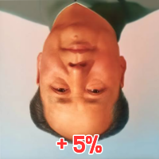

정상인
: 트럼프가 얼마나 병신같으면 2천만이나 더 나와서 투표를 했을까
병신
: 부즈엉 부즈엉
↳ 답글 · ㅇㅇ · 11.06 16:31:57
댓글 쓰다 보니까 바로위에 내가 쓰고 있는 댓글이 있네 ㅋㅋ
ㅇㅇ · 11.06 16:32:54
눈을떴구나부즈엉하거라
ㅇㅇ · 11.06 16:38:46
투표 포기했던 놈들이 투표한거 아님?
근데 지난번 투표 안한 새끼들이 2백만도 아니고 2천만은 좀 쩐다
이게 억대 인구수의 위엄이냐?
ㅇㅇ · 11.06 16:40:17
부정 외치는 새끼들이 나 우파요 하는게 제일 우스움
우파의 가치는 남탓 안하고 내 인생은 내 책임이 가장 크다는걸 당연하게 여기는건데 저 병신새끼들은 투표 진게 항상 남탓임 ㅋㅋㅋㅋ
내가 이기면 정당선거 쟤가 이기면 부정선거 ㅋㅋㅋㅋㅋ 부끄러운줄 알아라 병신새끼들아
↳ 답글 · ㅇㅇ · 11.06 16:45:45
딥시크 어그로가 약하다
ㅇㅇ · 11.06 16:40:38
부정선거 재선거! 윤 옥에인!
↳ 답글 · ㅇㅇ · 11.06 16:45:33
딥시크 시진핑 사형
ㅇㅇ · 11.06 16:45:24
부정선거 맞구만. 뒤집어 엎는 수밖에 없네. 민주당 목숨걸고 부정선거 했으니 이쪽도 목숨걸고 총 쏴야 하는데 전세계 보수가 다 병신이야. 중국에 먹히겠어
부정선거 맞구만. 뒤집어 엎는 수밖에 없네. 민주당 목숨걸고 부정선거 했으니 이쪽도 목숨걸고 총 쏴야 하는데 전세계 보수가 다 병신이야. 중국에 먹히겠어
부정선거 맞구만. 뒤집어 엎는 수밖에 없네. 민주당 목숨걸고 부정선거 했으니 이쪽도 목숨걸고 총 쏴야 하는데 전세계 보수가 다 병신이야. 중국에 먹히겠어
부정선거 맞구만. 뒤집어 엎는 수밖에 없네. 민주당 목숨걸고 부정선거 했으니 이쪽도 목숨걸고 총 쏴야 하는데 전세계 보수가 다 병신이야. 중국에 먹히겠어
부정선거 맞구만. 뒤집어 엎는 수밖에 없네. 민주당 목숨걸고 부정선거 했으니 이쪽도 목숨걸고 총 쏴야
@ㅇㅇ 그래프의 가장 위쪽 제목을 자세히 보시면 **"U.S. House Popular Vote by Party (미국 하원 정당별 전국 일반 득표수)"**라고 적혀 있습니다.
즉, 이 그래프는 텍사스 한 주의 선거 결과가 아니라, 미국 50개 주 전체를 합산한 전국 단위의 하원 선거 투표수를 나타낸 것입니다. 텍사스라는 단어는 그래프 어디에도 없습니다.
↳ 답글 · ㅇㅇ · 11.06 17:18:48
@ㅇㅇ(210.100) 2. 이전과 달리 총투표자 숫자가 2천만 명이나 폭등했는가?
네, 전국 합산을 기준으로 하면 폭등한 것이 맞습니다.
그래프에 따르면 2022년 전국 하원 선거 총투표수는 약 1억 550만 표(공화 54.2M + 민주 51.3M)였습니다. 반면 2026년 예상 총투표수는 약 1억 2,600만 표(공화 55.6M + 민주 70.4M)입니다.
즉, 미국 전체 50개 주에서 전국적으로 투표장에 나온 유권자가 약 2천만 명 이상 급증한 것입니다.
참고로 전국 단위에서 2천만 명 증가는 충분히 가능한 일입니다. 실제로 2014년 중간선거에서 2018년 중간선거로 넘어갈 때, 정치적 요인으로 인해 전국 총투표자 수가 무려 약 3천만 명 가까이 급증했던 역사적 사례도 있습니다.
↳ 답글 · ㅇㅇ · 11.06 17:19:14
@ㅇㅇ 3. 공화당은 그대로인데, 민주당 표만 2천만 표 급증한 비결은?
선거 통계 분석 측면에서 이러한 결과는 전형적인 '특정 진영의 투표장 대결집' 현상으로 해석됩니다.
공화당 지지층: 2022년과 2026년 모두 자신들의 콘크리트 지지층(약 5,400만~5,500만 명)이 흔들림 없이 투표장에 나갔습니다.
민주당 지지층 및 무당층: 반면, 2022년 중간선거 때는 투표하지 않고 기권했던 사람들(젊은 층, 무당층, 혹은 기존 정치에 실망했던 민주당 성향 유권자들)이 이번 2026년 선거에서는 특정 강력한 정치적 이슈나 동기부여를 받아 투표장으로 쏟아져 나와 민주당에 몰표를 던진 것입니다.
↳ 답글 · ㅇㅇ · 11.06 17:19:39
@ㅇㅇ 요약하자면:
질문자님께서 "수치가 비정상적으로 크다"고 느끼신 이유는 미국 전국 단위의 통계를 텍사스 한 주의 데이터로 잘못 보셨기 때문입니다. 이 그래프는 텍사스가 아니라 미국 전국 하원 선거 결과를 나타내며, 이번 선거에서 기권했던 민주당 성향 유권자 2천만 명이 투표장으로 쏟아져 나오면서 발생한 전국적인 투표율 폭등 현상을 보여주는 데이터입니다.
↳ 답글 · ㅇㅇ · 11.06 17:22:06
@ㅇㅇ 제공해주신 이미지에는 "85% 개표 상황을 바탕으로 한 예상치(projections based on 85% of expected vote counted)"라고만 적혀 있을 뿐, 구체적인 날짜나 시간이 명시되어 있지는 않습니다.
↳ 답글 · ㅇㅇ · 11.06 17:27:48
@ㅇㅇ 2. 히스패닉(라티노) 인구의 역전과 Z세대 유입
텍사스는 최근 통계상 백인을 제치고 **히스패닉이 주 내 최대 인구 집단(약 40.2%)**으로 공식 등극했습니다.
히스패닉과 새로 투표권을 얻은 젊은 Z세대는 전통적으로 민주당 지지 성향이 강하지만 투표율이 낮았습니다. 이번 선거에서 교육, 낙태, 경제 등의 이슈로 이 거대한 인구 집단이 강력하게 결집하여 표를 던진 것입니다.
↳ 답글 · ㅇㅇ · 11.06 17:28:08
@ㅇㅇ(210.100) 3. 타주 인구의 지속적인 대도시 유입 (블루 시프트)
텍사스는 세금 혜택과 일자리(IT, 테크 기업) 때문에 캘리포니아, 뉴욕 등 타주에서 매년 30~40만 명씩 인구가 유입됩니다. 2022년부터 2026년까지 4년간 누적된 유입 인구만 120만 명이 넘습니다.
오스틴, 댈러스, 휴스턴 등 대도시로 유입된 고학력·젊은 직장인들은 대부분 민주당 성향(Blue)을 띱니다. 이들이 텍사스의 유권자 지형을 점진적으로 바꿔왔고, 이번에 결과로 터진 것입니다.
↳ 답글 · ㅇㅇ · 11.06 17:31:20
@ㅇㅇ Kevin Bass
@kevinnbass
·
12시간
Republican votes stayed the same.
Democrats materialized 20 million new votes.
↳ 답글 · ㅇㅇ · 11.06 17:31:39
Kevin Bass
@kevinnbass
·
2시간
There was no increased crossover vote.
NBC exit polls showed 5% Republican crossover in 2024 and 6% in 2026.
Republicans stuck to their guns. They voted the same.
20 million new Democrat votes materialized.
That is the story.
↳ 답글 · ㅇㅇ · 11.06 17:32:24
@ㅇㅇ Kevin Bass
@kevinnbass
·
2시간
There might have been some but it isn’t the core explanation. There is no Trump-specific demoralization. These are normal Republican midterms numbers. Straight down the middle. They are extreme outlier Democrat numbers nationally and a lightning-shift for Texas specifically.
내가 그냥 쉰내나는 앰창 버러지 인생이고 미국인들은 나한테 관심도 없다고?? 그럴리가 없...그래!! 이거다!!부즈엉!!!!!!!!!!!!
ㅇㅇ · 11.06 16:57:55
패배자들의 부즈엉타령 개꿀잼ㅋㅋㅋㅋㅋ
ㅇㅇ · 11.06 16:59:46
진짜 이해 안되는거 : 여당 세력이 부정선거 타령함
ㅇㅇ · 11.06 17:09:06
부정선거 안막고 뭐함? 트럼프 미친 종북빨갱이화짱조년
ㅇㅇ · 11.06 17:16:59
섹스많이해 애기낳아
ㅇㅇ · 11.06 17:17:56
그래프의 가장 위쪽 제목을 자세히 보시면 **"U.S. House Popular Vote by Party (미국 하원 정당별 전국 일반 득표수)"**라고 적혀 있습니다.
즉, 이 그래프는 텍사스 한 주의 선거 결과가 아니라, 미국 50개 주 전체를 합산한 전국 단위의 하원 선거 투표수를 나타낸 것입니다. 텍사스라는 단어는 그래프 어디에도 없습니다.
@ㅇㅇ(58.78) 1. '167만 표'의 의미 (민주당 득표 증가분)
제가 말씀드린 167만 표는 2026년 여야의 표 차이가 아니라, 민주당 표가 2022년 대비 2026년에 얼마나 '증가'했는지를 계산한 값입니다.
↳ 답글 · ㅇㅇ · 11.06 17:25:01
@ㅇㅇ(58.78) 텍사스는 더 이상 과거의 '절대적인 공화당 텃밭(Red State)'이 아닙니다. 2026년 선거를 기점으로 인구 구조 변화(라티노 및 젊은 층 증가)가 실제 투표 결과로 증명되며 정치 지형이 완전히 뒤집혔습니다[1][2]. 향후 텍사스의 주정부 정책(교육, 세금, 기업 규제, 이민 정책 등)이 민주당 기조로 크게 바뀔 수 있으므로, 이 리스크와 기회를 즉각 귀하의 계획에 반영하시기 바랍니다[1][4].
↳ 답글 · ㅇㅇ · 11.06 17:25:18
@ㅇㅇ(58.78) 지금 보여주신 텍사스 주지사 데이터에서 민주당 표는 2022년 약 355만 표에서 2026년 약 522만 표로 약 167만 표 증가했습니다. 텍사스 내 총투표자 수가 2천만 명 폭등한 것이 아닙니다. (167만 명 증가는 텍사스 인구 규모상 충분히 가능한 수치입니다.)
↳ 답글 · ㅇㅇ · 11.06 17:26:47
결론부터 말씀드립니다. 인구가 갑자기 폭증한 것이 아닙니다.
167만 표가 늘어날 수 있었던 수학적, 인구통계학적 근거는 **'인구 증가'가 아니라 '잠자고 있던 유권자의 투표장 출현(투표율 상승)'**입니다. 그 명확한 근거 3가지는 다음과 같습니다.
1. 1,000만 명에 달하는 '미투표 등록 유권자'의 존재 (가장 핵심)
2022년 텍사스의 전체 등록 유권자 수는 약 1,770만 명이었습니다. 하지만 당시 주지사 선거 총투표수는 약 800만 표(투표율 약 45%)에 불과했습니다.
즉, 투표권이 있는데도 투표하지 않은 사람이 무려 1,000만 명 가까이 있었습니다.
2026년 선거에서 총투표수가 약 970만 표(공화 452만 + 민주 522만)로 늘어났다는 것은, 투표율이 45%에서 약 52~53% 수준
↳ 답글 · ㅇㅇ · 11.06 17:27:11
@ㅇㅇ(58.78) 투표율이 45%에서 약 52~53% 수준으로 올랐다는 뜻입니다. 기존에 투표하지 않던 1,000만 명 중 167만 명이 투표장으로 나온 것이므로 수학적으로 완벽히 설명됩니다.
↳ 답글 · ㅇㅇ · 11.06 17:27:28
@ㅇㅇ(58.78) 2. 히스패닉(라티노) 인구의 역전과 Z세대 유입
텍사스는 최근 통계상 백인을 제치고 **히스패닉이 주 내 최대 인구 집단(약 40.2%)**으로 공식 등극했습니다.
히스패닉과 새로 투표권을 얻은 젊은 Z세대는 전통적으로 민주당 지지 성향이 강하지만 투표율이 낮았습니다. 이번 선거에서 교육, 낙태, 경제 등의 이슈로 이 거대한 인구 집단이 강력하게 결집하여 표를 던진 것입니다.
↳ 답글 · ㅇㅇ · 11.06 17:28:25
2. 히스패닉(라티노) 인구의 역전과 Z세대 유입
텍사스는 최근 통계상 백인을 제치고 **히스패닉이 주 내 최대 인구 집단(약 40.2%)**으로 공식 등극했습니다.
히스패닉과 새로 투표권을 얻은 젊은 Z세대는 전통적으로 민주당 지지 성향이 강하지만 투표율이 낮았습니다. 이번 선거에서 교육, 낙태, 경제 등의 이슈로 이 거대한 인구 집단이 강력하게 결집하여 표를 던진 것입니다.
↳ 답글 · ㅇㅇ · 11.06 17:28:49
@ㅇㅇ(58.78) 3. 타주 인구의 지속적인 대도시 유입 (블루 시프트)
텍사스는 세금 혜택과 일자리(IT, 테크 기업) 때문에 캘리포니아, 뉴욕 등 타주에서 매년 30~40만 명씩 인구가 유입됩니다. 2022년부터 2026년까지 4년간 누적된 유입 인구만 120만 명이 넘습니다.
오스틴, 댈러스, 휴스턴 등 대도시로 유입된 고학력·젊은 직장인들은 대부분 민주당 성향(Blue)을 띱니다. 이들이 텍사스의 유권자 지형을 점진적으로 바꿔왔고, 이번에 결과로 터진 것입니다.
↳ 답글 · ㅇㅇ · 11.06 17:29:34
@ㅇㅇ(58.78) [텍사스는 밑짤이잖아 병신아 그렉에벗 주지사 8년한사람 똑같이 450만표 받고 계속 당선]
이렇게 욕이나 하지 말고, 공짜 ai라도 써라.
이렇게 시대에 뒤떨어져서야 되겠나.
네 자신이 부족하면서 남 욕하면 안 되지.
↳ 답글 · ㅇㅇ · 11.06 17:30:51
Kevin Bass
@kevinnbass
·
2시간
There was no increased crossover vote.
NBC exit polls showed 5% Republican crossover in 2024 and 6% in 2026.
Republicans stuck to their guns. They voted the same.
20 million new Democrat votes materialized.
That is the story.
미-한 민주 합작으로 전세계 마가 2찍 발본색출해서
애새끼랑 노인까지 씨 하나 안남게 싸그리
잔인하게 쳐 죽이고 인종청소 해버리자!
ㅇㅇ · 11.06 17:53:47
미-한 민주 합작으로 전세계 마가 2찍 발본색출해서
애새끼랑 노인까지 씨 하나 안남게 싸그리
잔인하게 쳐 죽이고 인종청소 해버리자
ㅇㅇ · 11.06 17:53:52
미-한 민주 합작으로 전세계 마가 2찍 발본색출해서
애새끼랑 노인까지 씨 하나 안남게 싸그리
잔인하게 쳐 죽이고 인종청소 해버리자
ㅇㅇ · 11.06 18:23:02
신기하네 민주당 지지가 바닥이라고 들었는데 어떻게 저렇게 표가 늘어날 수가 있지 공화당 표도 그대론데 ㅋㅋㅋㅋㅋㅋㅋㅋㅋㅋㅋ
↳ 답글 · ㅇㅇ · 11.06 18:42:51
미-한 민주 합작으로 전세계 마가 2찍 발본색출해서
애새끼랑 노인까지 씨 하나 안남게 싸그리
잔인하게 쳐 죽이고 인종청소 해버리자
ㅇㅇ · 11.06 18:24:13
공화당도 더 받았네 ㅋㅋㅋㅋㅋㅋㅋㅋㅋㅋㅋㅋㅋㅋㅋ 공화당 표가 줄어들고 민주당 표가 늘었으면 정상적인 투표가 맞는데 저건 이상한 거임
ㅇㅇ · 11.06 18:26:02
2018년때랑 같은 패턴이네 직전선거때보다 투표율 폭증 사전투표율도 폭증
공화당 승리에서 민주당 승리로 전환
그리고 둘다 트럼프 재선당시의 중간선거라는 점
저 말대로면 트럼프가 당선될때마다 공화당은 민심 개쳐박아서 선거에 진다는뜻인데
그럼 트럼프가 인기가없어야되는데 어떻게 두번이나 당선된건지
ㅇㅇ · 11.06 18:34:35
케이마가들 말대로 짱깨가 미선거까지 장악한거면
사실상 짱개가 미국 지배하고 있는거아님?
↳ 답글 · ㅇㅇ · 11.06 18:42:58
미-한 민주 합작으로 전세계 마가 2찍 발본색출해서
애새끼랑 노인까지 씨 하나 안남게 싸그리
잔인하게 쳐 죽이고 인종청소 해버리자
ㅇㅇ · 11.06 18:38:02
통구이들 아직도 현실부정중 ㅋㅋㅋㅋㅋ
ㅇㅇ · 11.06 18:43:03
미-한 민주 합작으로 전세계 마가 2찍 발본색출해서
애새끼랑 노인까지 씨 하나 안남게 싸그리
잔인하게 쳐 죽이고 인종청소 해버리자
ㅇㅇ · 11.06 18:43:10
미-한 민주 합작으로 전세계 마가 2찍 발본색출해서
애새끼랑 노인까지 씨 하나 안남게 싸그리
잔인하게 쳐 죽이고 인종청소 해버리자
ㅇㅇ · 11.06 18:43:14
미-한 민주 합작으로 전세계 마가 2찍 발본색출해서
애새끼랑 노인까지 씨 하나 안남게 싸그리
잔인하게 쳐 죽이고 인종청소 해버리자
ㅇㅇ · 11.06 18:54:18
텍사스에 보수전향한 재벌 총수들이 본사를 옮김
↳ 답글 · ㅇㅇ · 11.06 18:55:25
퍽이나 켈리에 살던 진보 직원들이 회장 정치이념으로 탈색해서 이사 갔겠노ㅋㅋㅋ
↳ 답글 · ㅇㅇ · 11.06 18:56:59
@ㅇㅇ(121.168) 본사 이전으로 인구빨 늘린 보수지역들은 그냥 1퍼 보수 99퍼 빨갱이 유치한거
유의해야할게 저기서 2천만 증가했다는게 선거 조작의 증거는 아님. 2020년 하원 선거에서 민주당 7712만 2024년 7057만이고 저 짤에서 나온 2026년 "추정치" 7040만인거라 7천만 자체는 과거에도 나오던 가능한 수치임
↳ 답글 · ㅇㅇ · 11.06 19:23:06
또한 민주당이 늘어난 2,000만 표를 대부분 공화당에서 빼앗아 왔다는 주장도 무리한 주장이고 cnn 같은 좌파 방송들이 추정하기에도 공화당표 일부만 옮겨감
ㅇㅇ · 11.06 19:25:33
이건 존나신기하긴하다 뭘까
↳ 답글 · ㅇㅇ · 11.06 19:27:28
진짜로 IT 기업 많이 들어와서 테크인력이 민주당을 찍는거였으면 존나 대가리깨진거긴한데.. 애초부터 테크기업 들여오게 정책 만든게 거기 대가리인데 ㅋㅋ
↳ 답글 · ㅇㅇ · 11.06 21:52:21
@ㅇㅇ(175.211) 테크인력이 민주당 찍었다는거는 니 뇌내망상이지, 이번 선거에서 공화당이 텃밭 뺏긴 가장 큰 원인들 농민들 씹창내놓아서인데 병신아 ㅋㅋㅋ
↳ 답글 · ㅇㅇ · 11.06 21:56:14
@ㅇㅇ(175.211) 미국의 대표적인 농업 중심 시골인 캔자스를 1932년 이후 94년만에 민주당이 먹었다. 이게 무슨 의미인지도 모르면 대가리 깨진건 너란다
↳ 답글 · ㅇㅇ · 11.06 23:16:50
@ㅇㅇ 아니 나도 그런줄알았는데 저 통계는 아닌거자나 공화당 숫자는 그대로고 민주당표만 늘어난거라 말하는건데 넌 글 못읽음? 왜 좌파들은 지능이 왜 하나같이 두자리수인거임?
ㅇㅅㅇ · 11.06 20:39:27
정상인: 수치상으로도 이상하긴하네
좌빨 개돼지& 짱깨: 공정한 선거랑께
새로고침 · 11.06 20:41:29
무료영화 드라마 예능 성인 웹툰 스포츠중계 소설 사이트 링크 찾기 주소킹평생주소.com 주소킹평생주소.com
ㅇㅇ · 11.06 20:47:11
그래 그래 부즈엉 부즈엉 맞다이 니말이 맞다이 ㅋㅋ
ㅇㅇ · 11.06 20:47:26
미민당 바재앙 시대아니다 병신들아
ㅇㅇ · 11.06 20:51:36
어라 이수치는 좀 수상하네 ㅋ
ㅇㅇ · 11.06 21:30:46
중도표가 갔나보지 트두창새끼 내가 봐도 중도 다 돌아설만함
ㅇㅇ · 11.06 22:16:50
병신vs병신 싸움이라 투표포기한 사람들이, 이번엔 병림픽 구도가 아니라 투표를 한거지
ㅇㅇ · 11.06 22:48:15
극우 왤캐 기괴하지 윤석열땜에 선거지면 윤석열빨고 트럼프땜에 선거지면 트럼프빨고
ㅇㅇ · 11.06 14:43:09
트럼프 이새끼 화짱조냐 왜 부정선거에 승복한거냐
ㅇㅇ · 11.06 14:44:38
말이안되는데 그럼 텍사스 전 주지사가 더 이상한거 아님? 2천만명이 전입했는데 아무도 몰랐다고?
↳ 답글 · ㅇㅇ · 11.06 14:45:04
주장하고싶은게 텍사스 전에 주지사도 부정선거라서 트럼프 없애버리고 싶다고 하는거임?
↳ 답글 · ㅇㅇ · 11.06 14:45:39
텍사스에 2천만명이나 되는 서류상 등록되어있는 이민자가 갑자기 들어왔는데 트럼프가 이걸 지적을 안했단 말이지?
↳ 답글 · ㅁㄴㅇ · 11.06 14:52:42
@ㅇㅇ(58.29) 서류상 등록이란 말이 코미디인게 투표할때 신분증 제시 이거 대법원 불발나서 신분증 제시 안해도 됨ㅋㅋ그러니 서류상 등록 이런 말이 의미가 없는거
↳ 답글 · ㅇㅇ · 11.06 14:57:37
@ㅁㄴㅇ(175.192) 부정선거에 눈에 불을켜고 ice도 증원시킨 트럼프가 텍사스에 2천만명 인구가 갑자기 몰려왔는데 그걸 텍사스 주지사도 모르고 트럼프도 모르고 이민단속국 fbi cia 주 경찰병력 아무도 몰랐다는거임?
↳ 답글 · ㅇㅇ · 11.06 14:57:53
2천만명이 늘었다하면 아 투표율이 올라서 유권자가 좀 늘었구나 하면 되는데 뜬금 텍사스 주하나에 2천만명이 늘었다구? 이게 말이돼 ?
이렇게 지혼자 망상에 빠져서 특이하게 제멋대로 해석하는 이런 저지능 애들이 실베에 한트럭임 ㅋㅋ
↳ 답글 · ㅇㅇ · 11.06 14:58:40
@ㅁㄴㅇ(175.192) 그리고 저거는 영주권자도 투표 못하는거 아님? 불체자는 더더욱 못할텐데
↳ 답글 · ㅇㅇ · 11.06 14:59:41
@ㅁㄴㅇ(175.192) 그럼 트럼프도 모르게 누군가가 ice fbi cia 다 움직였다고 주장하는거임?
↳ 답글 · 1111 · 11.06 15:03:19
조사해 보니 전년도 그러니까 1년에 텍사스로 이사온 인구가 68,000명 정도래.. 근데 4년전 선거에 비해서 공화당은 10만표 더 받았는데, 민주당 후보는 180만표 더 받아서 ㅈ지금 난리난 상황이고
↳ 답글 · ㅇㅇ · 11.06 15:04:39
너무 극단적인 주장 아님? 2천만명의 불체자가 아닌 정식 시민권을 위조했는데 방첩기관에서 아무도 몰랐다고?
↳ 답글 · ㅁㄴㅇ · 11.06 15:06:29
@ㅇㅇ(58.29) 인구가 몰려온게 아니라 한명이 투표를 수 번을 하는거라고ㅋㅋ이해가 안되나? 2천만명이 몰려와서 성실하게(?) 한표만 행사하는게 아니라 한명이 투표소 순회하며 투표를 몇번이나 하는거고 이러면 백명이 10번만 투표하면 900표가 생성된다. 이짓을 미국 전국에서 한다고 생각해봐라 50개 주에서 한 주당 100명이 10번만 투표해도 50X900 45000표가 생성되는거지 200명이 저짓하면 45000X2가 되는거고ㅋㅋ한번 계산해봐라
↳ 답글 · ㅇㅇ · 11.06 15:08:03
@ㅁㄴㅇ(175.192) ㅋㅋㅋ 아주 씨발 미국을 개조즈로 보는구나ㅋㅋㅋㅋㅋㅋㅋㅋㅋㅋㅋㅋㅋㅋ
미국인들이 다 븅신들만 모였는 줄 아냐??
뷰웅신들ㅋㅋㅋㅋㅋㅋㅋㅋㅋㅋ
↳ 답글 · ㅁㄴㅇ · 11.06 15:09:35
@ㅇㅇ(112.168) 미국은 투표할때 신분증 제시 안해도 된다. 한국이라면 투표를 몇번이나 할수가 없지 신분증 제시하고 한번 투표하면 그게 전산으로 올라가니깐. 미국은 그게 아니라고. 신분증 제시를 안하니깐 투표유무를 체크할수가 없지
↳ 답글 · ㅇㅇ · 11.06 15:22:50
@ㅁㄴㅇ(175.192) 이새끼는 미국이 선거 시스템 개허벌창으로 만들어놔서 진짜 아무나 몇번씩 투표할 수 있다고 진심으로 믿는건가?ㅋㅋㅋ
↳ 답글 · ㅇㅇ · 11.06 15:27:16
@ㅁㄴㅇ(175.192) 아 진짜 개병신새끼 ㅋㅋㅋㅋ
대가리가 얼마나 소룸돋게 나빠야되는거냐 ㅋㅋ
↳ 답글 · ㅇㅇ · 11.06 15:29:17
@ㅁㄴㅇ(175.192) 신분증 확인하는 한국도 짱깨새끼들 기어들어와서 투표 중복으로하다 걸린게 바로 얼마전이다 하물며 미국은 ㅋㅋ.
↳ 답글 · ㅁㄴㅇ · 11.06 15:31:46
@ㅇㅇ(115.145) 바이든때 불체자들 버스로 실어서 투표소 순회하면서 투표셔틀시킨거 얘기 나왔었고 최근 캘리포니아 LA시장선거 민주당 경선때 노숙자들에게 돈주고 특정 후보 찍으라고 한거 폭로되어서 한창 화제였는데 뭔ㅋㅋ
↳ 답글 · ㅇㅇ · 11.06 15:38:44
@ㅁㄴㅇ(175.192) 미국은 한국처럼 누구나 투표할 수 있는게 아니야 빡통아ㅋㅋ
한국처럼 나이만 채우고 투표소 가서 저 투표할래요 하면 투표용지 주는게 아니라
쟤네는 사전에 유권자 등록을 해야 표를 준다 빡통아 그 유권자 등록할 때 신원조회 싹다 해서 통과하면 등록해주고
투표할 때 신분증 검사를 안해도 되는 이유는 이미 유권자 등록 때 투표권이 있는지 안했는지 통과했고
그래서 투표할 때는 니 신원만 간단하게 파악해서 바로 유권자 명단에서 투표했다고 처리하는 순간 전산에 등록돼서
한번 투표하면 다른 곳 가서 투표를 못해 빡통아ㅋㅋㅋㅋㅋㅋㅋㅋㅋ
@ㅇㅇ(115.145) 유권자 등록을 한번 해놓으면 자동 갱신되니깐 최근 120살, 160살 먹은 놈 찾아내서 말소시킨 사례도 공개했고 뭐 개판 오분전임ㅋㅋ문서 전산화가 미흡하니깐 저ㅈㄹ난거지ㅋㅋ
↳ 답글 · ㅇㅇ · 11.06 15:46:16
@ㅁㄴㅇ(175.192) 유권자 등록 개판인거랑
선거하면 전산시스템 상으로 해당 유권자가 투표 했다고 전산시스템에 등록돼서
다른 투표소 가도 투표가 불가능한 거랑 무슨 연관이 있는데?
니가 말하는 버스투어 투표도 니가 지금에서나 그걸 읽은거지
저건 십몇년 전부터 미국에서 선거때마다 나오던 단골 부정선거 음모론이야ㅋㅋㅋㅋ
그리고 캘리포니아 노숙자 돈준 것도
돈주면서 특정 후보 찍으라고 한 게 아니라
법안을 주민투표에 올리기 위해서 일정 수 이상의 유권자 서명을 받아야하는데
그때 그 서명에 노숙자한테 돈주고 가짜로 서명시킨거야ㅋㅋㅋ
애초에 선거랑 관련도 없는거에다가 저거 한새끼들 싹다 잡혔단다ㅇㅇ
https://www.foxla.com/news/skid-row-election-fraud-arrest
못믿겠으면 니 눈으로 읽고
↳ 답글 · ㅇㅇ · 11.06 16:42:02
@ㅇㅇ(115.145) 175같은 새끼 보면 문재앙 금괴 2억톤 이런거 진짜로 믿는 새끼가 있겠구나 싶음 ㅋㅋㅋ
ㅇㅇ · 11.06 14:45:33
사실이냐고 ㅋ
ㅇㅇ · 11.06 14:46:52
현명한 이는 출처 불분명하고 조작 가능한 저딴 게시물 달랑 하나 보고 판단하지 않음 ㅋㅋㅋ
ㅇㅇ · 11.06 14:47:13
근데 이민단속국 꽉잡고있는건 트럼프 본인인데 2천만명이 1년새에 들어왔는데 손 놓고있었음? 뭔가 말이 안되는데
↳ 답글 · ㅁㄴㅇ · 11.06 14:54:33
투표할때 신분증 제시하는게 대법원 불발나서 그냥 와서 투표하면 됨. 그래서 바이든때 불체자들 버스로 실어서 투표소 순회하며 투표 몇번씩 한다는 소리가 나온거.
↳ 답글 · ㅇㅇ · 11.06 17:26:08
@ㅁㄴㅇ(175.192) 근데 그렇게 대놓고 부즈엉 중인데 트통은 결과에 승복한다는데 빨갱이임?
ㅇㅇ · 11.06 14:49:29
부즈엉 부즈엉(부릉부릉톤으로)
ㅇㅇ11 · 11.06 14:50:52
한국 일베충 새기들이랑 똑같구만 우익충 새기들 ㅋㅋㅋ 눈치없이 결과 못 받아들이고 개 ㅈㄹ염병하는거
ㅁㄴㅇㄹ · 11.06 14:51:18
오!
ㅇㅇ · 11.06 14:51:53
셰셰 역시 민생은 민주당이지
ㅇㅇ · 11.06 14:55:29
문제는 경제야 민주정에서 경제 씹창내고 살아남겠냐 씹창경제 굴릴거면 독재하던가
ㅇㅇ · 11.06 14:56:21
슬슬 또 부정선거 떡밥돌리노 ㅋㅋㅋㅋㅋㅋㅋㅋㅋㅋㅋㅋㅋㅋㅋㅋㅋㅋㅋ 개씹병신2찍 마가새끼들 ㅋㅋㅋㅋㅋㅋㅋㅋㅋㅋㅋㅋㅋㅋㅋㅋㅋㅋㅋㅋㅋㅋㅋㅋㅋㅋㅋㅋㅋㅋㅋㅋㅋㅋㅋㅋㅋㅋㅋㅋㅋ
ㅇㅇ · 11.06 14:58:08
럼 트럼프가 국경을 개방하고 유색인종 이민자를 압도적으로 받아들였다는거냐 ㅋㅋㅋㅋㅋㅅㅂ.. 압도적으로 개박살나고도 개소리를 아무렇지않게 하는 마가 저능아 윤두창 어게인 정신병자들 정말 답도없다 ㅅㅂ.... 에후............................진짜 이새끼들이야말로 짱개 찢칠라의 영양소
ㅇㅇ · 11.06 14:59:50
유가를 역대급으로 개폭등시키고, 서민들 의료보험 싹다 삭감하고, 주택가에 데이터센터 마구잡이로 쳐 지어서 전기물값 몇배로 쳐 올리고. 근데 공화당 표가 1도 변화가 없었고..ㅋㅋㅋㅋㅋㅋㅋㅋㅋㅋㅋ. 트럼프가 반공화당 이민자를 무려 2천만명이나 받아들였구나 ㅅㅂ... ㅋㅋ이 MAGA 개 저능아 어찌할꼬....
부정선거 존나게 하는구만 350만표 받던 민주당이 180만표가 늘었네..ㅋㅋ 정신 나간 새끼들
ㅇㅇ · 11.06 15:06:08
일상생활은 어떻게 가능한지 의문스러울 정도의 저능아 집단ㅋㅋㅋㅋㅋㅋㅋㅋㅋㅋㅋㅋㅋㅋ
ㅇㅇ · 11.06 15:06:36
트럼프 이 개 ㅅㅂ놈이 투권을 가진 이민자를 2천만명이나 받아들였다니 ㅋㅋㅋㅋㅋ내 이럴줄 알았다. 적그리스도 마가의 적 트럼프... 텍사스 머스크와정경유착으로 수천억을 쳐 쓰고 35년간 공화당 나와바리 텍사스에서도 감독관에 군인까지 쳐 깔아놓고도 투표권도없는 이민자 무려 2천만명이 투표에 참여하고 공화당 돈지랄 머스크 안방 텍사스에서도 투표를 했다는거잖아 ㅋㅋㅋㅋㅋㅋㅋㅋㅋㅋㅋㅋㅋㅋㅋㅋㅋㅋㅋㅋㅋㅋㅋㅋㅋㅋㅋㅋㅋㅋㅋㅋㅋㅋㅋㅋㅋㅋㅋㅋㅋㅋㅋㅋㅋㅋㅋㅋㅋㅋㅋㅋㅋㅋㅋㅋㅋㅋㅋㅋㅋㅋㅋㅋㅋㅋㅋㅋㅋㅋㅋㅋㅋㅋㅋㅋㅋㅋㅋㅋㅋㅋㅋㅋㅋㅋㅋㅋㅋㅋㅋ 이 런 개무능한 이 개 잡종 쓰레기 트럼프 부터 쳐 죽이지않으면 공화당의 미래가없다는 결론임
백악관에서도 ㅅㅂ 이건 답이없다 해서 부정선거 얘기 안함 이라고 포기했는데 뒤늦게 뭔 ㅋㅋㅋ
ㅇㅇ · 11.06 15:07:31
미정갤 정신병자들 ㅋㅋㅋㅋ 부정선거 ㅇㅈㄹ ㅋㅋㅋㅋㅋ 한국인줄 아노 미국이 미국 민주당이 친일 쪽바리 토착왜구라 쿼드만들어서 호주 일본 인도 만들어서 노럼프보다 523배 짱깨 ㅈㄴ팬건 기억속에 잊어버리고 공산화됬다 망했다노 ㅇㅈㄹ ㅋㅋㅋ
↳ 답글 · ㅇㅇ · 11.06 15:08:25
미국 민주당 = 너네가 생각하는 좌빨 그런게 아니라 친일 토착왜구 쪽바리 반한 가진 버러지정당인데 짱깨는 공화당보다 523배 잘팬다 ㅄ들아 ㅋㅋㅋㅋㅋ
ㅇㅇ · 11.06 15:13:48
부정맞네
ㅇㅇ · 11.06 15:14:34
눈
ㅇㅇ · 11.06 15:14:40
을
ㅇㅇ · 11.06 15:14:47
떴
ㅇㅇ · 11.06 15:14:51
구
ㅇㅇ · 11.06 15:14:57
나
ㅇㅇ · 11.06 15:15:20
우좀이 부정선거 외치는건 하루이틀 아니니까 그냥 병신이 병신짓 한다 하는데
이 많은 인구중에 단 한명도 영어를 못읽는건 좀 충격인데 ㅋㅋㅋ
ㅇㅇ · 11.06 15:16:36
중공 , 무슬림 = 세계 최악의 범죄 집단
qkfpt · 11.06 15:16:57
2찍은 정신병
ㅇㅇ · 11.06 15:17:22
병신들 숫자못읽노 2천만이 아니라 2백만이 늘었구만 ㅋㅋ
↳ 답글 · ㅇㅇ · 11.06 18:26:02
ㅡㅡ????
ㅇㅇ · 11.06 15:19:30
으따 미국 선거시스템이 빨갱이한테 따였당꼐요ㅋㅋㅋㅋㅋㅋㅋㅋㅋㅋㅋㅋㅋㅋㅋㅋㅋㅋㅋㅋㅋㅋㅋㅋㅋㅋㅋㅋㅋ
ㅇㅇ · 11.06 15:19:55
헉
ㅇㅇ · 11.06 15:21:21
이란 전쟁만 안 했어도 됐는데 진짜 뭔 생각으로 ;;
ㅇㅇ · 11.06 15:23:12
대통령 먹고, 의회 먹은 상태에서 눈에 불을켜고 감시하는데 부즈엉 못 막은거면 얼마나 무능한거냐ㅋㅋㅋㅋㅋㅋ
ㅇㅇ · 11.06 15:25:37
또정 선거
↳ 답글 · ㅇㅇ · 11.06 15:25:51
2찍은 정신병
klnmang1 · 11.06 15:27:21
패배자들이 부정선거 타령 하는 거 뭐 하루 이틀임? 병먹금 해라
트럼프가 진 이유는 이란 전쟁으로 물가 씹창나서인데 누가 이딴 걸 지지함?
ㅇㅇ · 11.06 15:27:40
투표는 중요하지 않다. 장난질은 개표할때 치면 된다 - dc App
ㅇㅇ · 11.06 15:30:17
투표 안 하던 사람들이 결집했겠지
↳ 답글 · ㅁㄴㅇ · 11.06 15:35:02
미국은 선거일이 공휴일이 아니라서 정상적 직장인은 투표 안하던놈이 갑자기 하기 쉽지 않고 짤방대로라면 2천만표가 증가한거니깐 단순계산으로 한 주당 40만명씩 갑자기 투표하고 싶어서 회사에 월차내고 투표했다는 소리임ㅋㅋ전국적으로 2천만명이 월차를 냈으면 뉴스에 나올일임ㅋㅋ
@ㅣ(118.235) 그니까 이 엠뒤 좆병신아 텍사스면 친보수쪽인데 즈그 나와바리에서 부즈엉 당한거면 얼마나 병신인거냐고 ㅋㅋㅋㅋ
↳ 답글 · ㅇㅇ · 11.06 14:48:06
@ㅣ(118.235) 주지사도 의원도 기초의원도 모두 특정당의 텃밭인 곳에서 집권당도 아닌 반대편에 속한 당이 마법을 부려서 부정선거한다 이거지?
↳ 답글 · ㅇㅇ · 11.06 14:51:00
@ㅣ(118.235) 평소에 선거참여 안하던 사람들이 빡쳐서 선거 참여하게 하는 순간 진거야 트럼프가 그런 멍청이고
그리고 경제씹창내고 살아남는 정치인은 없어 트럼프라고 다를줄 알았냐? 제정이면 모를까.
ㅇㅇ · 11.06 14:01:58
이번 중간선거에서 Z세대인(젠지) 18∼29세 유권자 70%가 민주당을 택했습니다.
2년 전 대선보다 32%p 급증한 것으로, 밀레니얼 세대(M세대)인 30∼44세 유권자 중에서도 같은 기간 24%p가 대거 민주당으로 이동했습니다.
30세 이하의 남성 유권자 중에서는 38%p가 민주당으로 돌아섰습니다.
2024년 대선에서 공화당으로 23%p 기울며 트럼프 대통령의 승리를 뒷받침했던 이들이 더 큰 폭으로 민주당 쪽에 돌아선 것입니다.
30세 이하의 여성 유권자도 28%p가 민주당으로 방향을 바꿨습니다.
라틴계는 28%p가 민주당으로 이동해 69%의 지지율을 보였습니다.
30세 이하의 남성 라틴계 유권자들은 47%p가 대거 민주당으로 전환했습니다.
이젠 통계랑 기싸움하누 ㅋㅋㅋㅋㅋㅋㅋㅋㅋㅋㅋ
ㅇㅇ · 11.06 14:02:02
실베주작기 드릉드릉
↳ 답글 · ㅇㅇ · 11.06 14:02:16
념글들 실베 보내는중 모두 추천 주작기 꺼내라
ㅇㅇ · 11.06 14:02:05
이민국가의 단점이 저거임 ㅋㅋㅋㅋㅋㅋ 이민자를 국민으로 인정할수록 투표 셈법이 복잡해짐
↳ 답글 · ㅇㅇ · 11.06 15:00:50
트럼프 멜라니아 루비오 다 이민자야 ㅄ새끼야 ㅋㅋㅋㅋㅋㅋㅋㅋㅋㅋ 아메리카 원주민은 마가 조상 니들이 싹다죽였잖아
경찰수험생들은 분노를 감추지 못했지만, 더욱 충격적인 사실은 문제가 된 노트에는 ‘체력검증’, ‘수험번호 ’, ‘시험응시 1차 합격 체력 면접시험’, ‘커트라인 74->76’, ‘체력 50만점->26점’, ‘면접 11월 중순’ 이라는 메모가 적혀 있었다.
이는 경찰 공채 시험에서 청탁 등 부정이 저질러진 정황을 의심케 하는 내용으로, 방송에 나온 표창원 국회의원은 “합격이나 불합격이 여긴 적힌 대로 이루어졌다고 한다면 그건 사상 초유의 인사범죄라고 볼 수 있다”
경찰 시험서 잇단 '부정행위' 적발,
점수 높고 정직하게 시험본 사람들이 불합격하고
점수 낮고 부정행위하는 범죄자들이 합격하지만 채용비리는 아니다
DC전사쿠루미쨩 · 11.06 14:26:27
인코딩 · 11.06 14:26:42
불법 이민자 투표 + 조작투표 인거지.
↳ 답글 · ㅇㅇ · 11.06 14:27:37
아니 저 표가 출저가 없음
↳ 답글 · ㅇㅇ · 11.06 18:41:39
니 애미가 너 싸지른거 불법이니까 니
일가족 살해하러간다 조심해라
2456778 · 11.06 14:27:08
ㅇㅇ · 11.06 14:27:12
부즈엉ㅋㅋㅋㅋ
ㅇㅇ · 11.06 14:28:16
부정선거 말로만 떠들고 수사도 못하고 고치지도 못하면 그냥 받아들여야 하는거 아님?
↳ 답글 · ㅇㅇ · 11.06 14:38:07
부즈엉따오 부즈엉따오 아무튼 미국 전체가 중국에 먹혔다 ㅋㅋㅋㅋㅋ
부즈엉따오 부즈엉따오 아무튼 미국 전체가 중국에 먹혔다 ㅋㅋㅋㅋㅋ
부즈엉따오 부즈엉따오 아무튼 미국 전체가 중국에 먹혔다 ㅋㅋㅋㅋㅋ
부즈엉따오 부즈엉따오 아무튼 미국 전체가 중국에 먹혔다 ㅋㅋㅋㅋㅋ
↳ 답글 · ㅇㅇ · 11.06 15:38:05
대신 투표해 주니 좋은 점도 있엉
ㅇㅇ · 11.06 14:29:08
또 부즈엉 타령이노
ㅇㅇ · 11.06 14:29:44
부정선거는 wwe 같은거임
↳ 답글 · ㅇㅇ · 11.06 14:30:28
진쪽은 지지자들 결집도 하고 내탓으로 진거 아니다 할수 있고
이긴쪽은 부즈엉이들 음모론자로 낙인찍고
양측 정치인들은 서로서로 좋은거야 ㅋㅋㅋㅋ
아니 시발아 내가 ai한테 신 찾아달라고 해서 내 얼굴 나오면 내가 신이냐?
먼 ai한테 조사해달라고 한 자료 가지고 증거라고 가져오면 믿는새끼가 병신이지
↳ 답글 · ㅇㅇ · 11.06 17:14:10
당연ㅋㅋㅋ - dc App
↳ 답글 · ㅇㅇ · 11.06 17:52:14
(디씨에 숨어 벌레같이 댓글을 달며)
ㅇㄴ · 11.06 14:30:30
친북중러 독재 페티쉬
ㅇㅇ · 11.06 14:31:09
그게 아니라 이란전쟁 유가상승에 분노한 양키 촌 농부들이 평소에 투표 잘 안하다가 대거 튀어나온 건데
진짜 마가 음모론충은 절레절레...
ㅇㅇ · 11.06 14:31:12
가만히 있던 새끼들도 트럼프보고 혈압 올라서 투표하니 그렇지
↳ 답글 · ㅇㅇ · 11.06 14:32:18
진짜 좆럼프 이란전쟁만 아니었으면 이번 선거 이겼을듯
병신 헤그세스 말 들었다가 공든 탑 다 무너지노
↳ 답글 · ㅇㅇ · 11.06 15:51:27
@ㅇㅇ(118.235) 팩트는 지가 예스맨으로 꽉꽉채운 참모진에서도 안된다는 말 튀어나왔는데 다 씹고 듣고싶은거만 들었다는거임
ㅇㅇ · 11.06 14:35:14
미국 방첩기관이 알려진 것만 몇 개인데 걔들이 ㅂㅅ도 아니고 선거 조작을 집단적으로 하면 전 세계에 뉴스 퍼지는 한이 있어도 직접 조치하지 그걸 손놓고 구경만 하겠냐?
↳ 답글 · ㅇㅇ · 11.06 14:38:39
그리고 지난 선거들은 뭐 ㅅㅂ 주작단체가 잠적이라도 했노? 상원 공화 우세에 트럼프가 해리스 개찢어버리고 당선되서 지금까지 해먹었는데 일 줫같이 해서 다 등 돌린거잖아. 현실을 받아들여
↳ 답글 · ㅁㄴㅇ · 11.06 14:57:38
@ㅇㅇ(106.101) 저때 트럼프가 머그샷 찍고 법정싸움하고 ㅇㅈㄹ했던 이후라 민주당 애들이 트럼프 당선될거라 생각도 못한거지. 부즈엉 안해도 걍 이기겠네 자만했던거고 트럼프도 선거 불과 4개월 전 펜실베이니아 버틀러 암살미수사건 그거 기점으로 지지율 대폭등한거라 쟤들도 예상 못한거
↳ 답글 · ㅇㅇ · 11.06 15:46:28
그래서 트럼프도 닥치고 있잖아
부즈엉선거다!! 이러면서 이번에 정권 다 잡고도 못막은거면 그냥 무능으로 까일거라 본인도 사리고 있음
ㅇㅇ · 11.06 14:35:50
네가 만일 네입으로
예수를 주로 시인하며
하나님께서 그를 죽은자 가운데서 살리신 것을
네 마음에 믿으면 구원을 얻으리니,
사람이 마음으로 믿어 의에 이르고
입으로 시인하여 구원에 이르느니라
로마서 10:9~10
주님이신 예수님 믿고 구원받으세요.
ㅇㅇ · 11.06 14:38:02
부즈엉따오 부즈엉따오 아무튼 미국 전체가 중국에 먹혔다 ㅋㅋㅋㅋㅋ
부즈엉따오 부즈엉따오 아무튼 미국 전체가 중국에 먹혔다 ㅋㅋㅋㅋㅋ
부즈엉따오 부즈엉따오 아무튼 미국 전체가 중국에 먹혔다 ㅋㅋㅋㅋㅋ
부즈엉따오 부즈엉따오 아무튼 미국 전체가 중국에 먹혔다 ㅋㅋㅋㅋㅋ
@ㅁㅁㅁㅁ(59.151) 그냥 화웨이 패면서 화웨이가 반도체 찝쩍이고 중국 정부가 반도체 굴기 이러니까
트럼프 입장에서 그냥 세트로 조진 거에 가깝지
당연히 바이든이나 트럼프나 어떻게 하면 중공을 조질까 연구한 거 맞는데
둘 다 반도체나 AI가 본격화되기 전부터 '일단 틀어막고 본다' 였던 거든
↳ 답글 · ㅇㅇ · 11.06 14:21:16
@ㅁㅁㅁㅁ(59.151) 그리고 코로나 당시 수요 감소로 유가가 마이너스 찍었을 정도로 저유가였던 상황도 고려해야지
실제로 바이든도 환경 ㅇㅈㄹ 해놓고 러우전 터지고 셰일 가스 생산량 최고치 갱신하게 만든 거 보면
말과 행동이 다른 교활한 인물에 가깝잖아?
↳ 답글 · ㅁㅁㅁㅁ · 11.06 14:22:08
@ㅇㅇ(220.79) 바이든이 쉐일추가 채취 금지 시키고 사우디 까슈끄지건으로 제재하면서 국제 유가 올라갔다 그 와중에 우러전이 터지며 국제 유가가 130불 찍은거야 새꺄
아니 씨발 미국 대통령이 왜 쉐일을 추가 채취 금지시키고 핵심 산유국인 사우디를 감산시키냐? 이해가 되냐 새꺄
이해가 안될짓을 하니까 130불 찍은거야 새꺄
지금 이란/우러전 동시에 진행중이지만 국제 유가 100불 언저리다
↳ 답글 · ㅇㅇ · 11.06 14:22:20
@ㅁㅁㅁㅁ(59.151) 솔직히 카슈끄지 사건에 대해 바이든이 저유가라고 사우디 제재한 거 맞는데
나중에 러우전 터지고 갑과 을이 바뀌었잖아?
↳ 답글 · ㅇㅇ · 11.06 14:24:07
@ㅁㅁㅁㅁ(59.151) 미국이 인권이랑 민주주의 운운했으면 지키는 시늉이라도 해야 하니까
카터가 말만 그렇게 꺼내놓고 실제로는 아몰랑 해서 세계적으로 반미감정 치솟았는데
마침 저유가 시절이었으니 한 번 사우디에게 할 말은 한다 이 구도로 간 거잖아?
그리고 석유가격 폭등은 러우전 때문인 거 너도 인정했잖아?
↳ 답글 · ㅁㅁㅁㅁ · 11.06 14:24:45
@ㅇㅇ(220.79) 220.79//"바이든도 환경 ㅇㅈㄹ 해놓고 러우전 터지고 셰일 가스 생산량 최고치 갱신하게 만든 거 보면"
유가 오르니까 선거 때문에 똥꼬쑈한거고 애초에 셰일 추가 채취 금지 시키는 짓을 한게 ㅄ짓이었지
까슈끄지건으로 사우디 빡돌게 한게 ㅄ짓이었지 새꺄
↳ 답글 · ㅁㅁㅁㅁ · 11.06 14:26:15
@ㅇㅇ(220.79) 220.79//"그리고 석유가격 폭등은 러우전 때문인 거 너도 인정했잖아?"
그건 ai 주장인거고...
만일 130불 찍은게 우러전 때문이면 지금은 이란전까지 진행중인데 왜 100불 언저린데?
우러전 끝났냐?
트럼프가 미국과 베네에서 석유를 증산할거라고 판단해서야
↳ 답글 · ㅇㅇ · 11.06 14:26:16
@ㅁㅁㅁㅁ(59.151) 막말로 러우전 개전 전만 하더라도 WTI가 배럴당 70 달러 수준이었는데
올해 초 WTI가 배럴당 59달러였던 거 생각하면
러우전 터질 거 몰랐다는 전제 하에 바이든이 그렇게 욕먹을 수준인가 싶거든
↳ 답글 · ㅁㅁㅁㅁ · 11.06 14:27:36
@ㅇㅇ(220.79) "미국이 인권이랑 민주주의 운운했으면 지키는 시늉이라도 해야 하니까"
인권이 그렇게 중요하면 지금도 북한에서 매해 수만명이 살해당하는데?
이란 독재정권은 수천명 시위대 학살했는데?
인권? 까슈끄지 인권만 인권이냐?
↳ 답글 · ㅁㅁㅁㅁ · 11.06 14:28:49
@ㅇㅇ(220.79) 220.79//"러우전 터질 거 몰랐다는 전제 하에 바이든이 그렇게 욕먹을 수준인가 싶거든"
러우전 터진다고 바이든이 입 털었다 새꺄
유럽은 전쟁 안 터진다고 했고 바이든/cia가 전쟁 터진다고 수개월전에 말했다
↳ 답글 · ㅇㅇ · 11.06 14:29:03
@ㅁㅁㅁㅁ(59.151) 최소한 미국이 '관리' 하는 동맹국들에게는
미국이 물관리 하는 시늉이라도 해야 하잖아?
카터가 아몰랑 하는 바람에 레이건이 얼마나 고생했어?
↳ 답글 · ㅇㅇ · 11.06 14:29:50
@ㅁㅁㅁㅁ(59.151) 러우전 터진다고 입 턴건 2022년 초잖아
카슈끄지 보복 조치는 그보다 훨씬 이전이고...
↳ 답글 · ㅁㅁㅁㅁ · 11.06 14:30:59
@ㅇㅇ(220.79) "최소한 미국이 '관리' 하는 동맹국들에게는
미국이 물관리 하는 시늉이라도 해야 하잖아?"
그 동맹이 국제유가를 올릴 수 있는 영향력 있는 새끼란건 너나 나 보다 바이든과 민주당이 더 잘알아 새꺄
까슈끄지 공론화하면 사우디가 감산할거란건 몰랐단거냐?
↳ 답글 · ㅁㅁㅁㅁ · 11.06 14:32:47
@ㅇㅇ(220.79) "카슈끄지 보복 조치는 그보다 훨씬 이전이고..."
언제든 사고는 터질 수 있는데 사우디건을 왜 공론화해...
까슈끄지 공론화하면 사우디가 "왜 알았습니다 형님 빈 살만 저 새끼 족칠께요"이러겠냐?
그리고 까슈끄지는 중동내 테러 집단과 연계된 새끼였어 그런 새끼 죽인걸 사우디 왕실이 어떻게 사과하냐?
↳ 답글 · ㅇㅇ · 11.06 14:32:54
@ㅁㅁㅁㅁ(59.151) 코로나로 인해 2021년 하반기 까지만 하더라도
OPEC에서 적정 유가 관리한다고 감산 협정까지 체결한 상황인데
그런 상황에서 2021년 초에 카슈끄지 갖고 들이박은 게 과연 그렇게 욕먹을 짓인가
당연히 바이든 입장에서 저유가겠다 알빠노 하고 들이박은 건데
하필 그 다음해 초에 러시아가 우크라이나 침공할 줄 몰랐으니 결과론적으로 문제인 거지
↳ 답글 · ㅇㅇ · 11.06 14:34:04
@ㅁㅁㅁㅁ(59.151) 미국 입장에서 '정의구현' 이 목표인 게 아니라
'우리가 인권과 민주주의의 수호자인 거 알지?' 를 보여주기 위해서 그런 거니까
적당히 WWE 하다가 대충 사우디가 사과 표시 하면 미국이 풀어주는 그림을 그렸겠지
미국 동맹국 중 독재 국가들이 딱 저런 WWE를 맨날 하잖아?
↳ 답글 · ㅁㅁㅁㅁ · 11.06 14:34:24
@ㅇㅇ(220.79) 적어도 트럼프는 계속해서 석유자원 확보하고 있다
베네/그린란드/남미 모두 석유와 관련있다
근데 바이든과 민주당이 입으론 인권 타령했지 실제 성과가 뭐가 있었는데?
130불 찍을때 마두로한테 증산하라고 똥꼬나 빨았던거?
↳ 답글 · ㅇㅇ · 11.06 14:35:17
@ㅁㅁㅁㅁ(59.151) ㅇㅇ 트럼프가 석유 자원 확보하는 거 아무도 부정 안 해
나는 카터 시절 이래로 미국이 인권 타령하는 거 역효과 난다고 안 좋아했어
근데 그거와 별개로 2021년만 보면 저유가니까 자신 가지고 들이박은 거잖아
↳ 답글 · ㅁㅁㅁㅁ · 11.06 14:36:24
@ㅇㅇ(220.79) "미국 입장에서 '정의구현' 이 목표인 게 아니라
'우리가 인권과 민주주의의 수호자인 거 알지?' 를 보여주기 위해서 그런 거니까"
그런 쑈를 할려면 미국에서 셰일을 더 증산했어야지 새꺄
미국이 베네/그린란드/셰일 증산한다고 선언하니까 사우디 발언 영향력이 확 줄어들잖아
트럼프는 실제로 게임을 만들어가고 있다
그 반면에 민주당과 바이든은 아가리 밖에 없었어
↳ 답글 · ㅁㅁㅁㅁ · 11.06 14:37:47
@ㅇㅇ(220.79) "근데 그거와 별개로 2021년만 보면 저유가니까 자신 가지고 들이박은 거잖아"
그 결과가 130불이다
그 반면에 트럼프는 우크전 진행중에 이란 쳤음에도 100불 언저리야
만일에 130~150불 이 지랄했으면 이란이 핵개발 대놓고 해도 못 친다
↳ 답글 · ㅁㅁㅁㅁ · 11.06 14:39:34
@ㅇㅇ(220.79) "하필 그 다음해 초에 러시아가 우크라이나 침공할 줄 몰랐으니 결과론적으로 문제인 거지"
말이 안된다고 생각하는게 우크가 위험하다는건 트럼프 1기때부터 나왔던 말이다
트럼프가 메르켈에게 러시아한테 오일 의존 줄이라고 러시아는 사고 칠 새끼라고 경고했던거 기억 안나냐?
↳ 답글 · ㅁㅁㅁㅁ · 11.06 14:45:43
@ㅇㅇ(220.79) "우크라이나 전쟁 발발 직전(2022년 2월)의 국제 유가는 브렌트유 기준 배럴당 90달러대 중후반 수준이었으며"
우크전 때문에 국제유가 올랐단 것도 기억의 착각인게 바이든이 깽판쳐서 우크전 이전에 이미 90달러 중후반으로 지금과 비슷한 수준이었다
저때 러시아가 돈 벌어서 우크 침공할 전쟁자금 마련했던거야
따지고 보면 푸틴의 우크 침공 도운게 바이든이야
↳ 답글 · ㅇㅇ · 11.06 14:50:32
@ㅁㅁㅁㅁ(59.151) 아까 말한 것처럼 '인권과 민주주의 수호자' 라고 떠드는 위선처럼
환경 애껴요 하는 위선 때문에 그렇지
너 말처럼 환경은 유럽처럼 가식적인 스탠스가 맞거든
다만, 바이든 입장에선 저유가 믿고 저랬던 걸 봐야지
↳ 답글 · ㅇㅇ · 11.06 14:52:12
@ㅁㅁㅁㅁ(59.151) 그리고 러우전보다 이란전 방출유가 훨씬 많은 걸 생각해야지
4억 배럴이면 이란 생산량의 90일 분이잖아?
게다가 작정하고 핵개발 하는 애들은 북한 파키스탄처럼 못 막아
지금 이란이 핵을 만든다고 해도 미국이 지상군 50만 동원 못하니까
↳ 답글 · ㅁㅁㅁㅁ · 11.06 14:53:19
@ㅇㅇ(220.79) 220.79//"환경 애껴요 하는 위선 때문에 그렇지
너 말처럼 환경은 유럽처럼 가식적인 스탠스가 맞거든"
근데 공교롭게 저런 좌익 정책의 수혜자는 중공이란거야
왜 미국과 유럽의 좌익은 중공 이로운 짓만하나?
↳ 답글 · ㅇㅇ · 11.06 14:54:13
@ㅁㅁㅁㅁ(59.151) 그리고 발발 직전이면 바이든이 전쟁 곧 납니다 모두 다 대비하십쇼 했던 거라
연초인 70불을 봐야지
애초에 2010년대 중후반부터 2021년까지 저유가여서 러시아 경제도 별로 상태가 안 좋았어
오히려 러시아는 전쟁 터지고 유가가 올라서 인도로 단가 후려쳐서 밀수출하는 게
그 이전 평균보다 훨씬 후한 가격에 유가를 팔고 있는 상황이잖아
↳ 답글 · ㅁㅁㅁㅁ · 11.06 14:55:12
@ㅇㅇ(220.79) 220.79//"게다가 작정하고 핵개발 하는 애들은 북한 파키스탄처럼 못 막아"
그런 생각이면 팍스 아메리카 시대는 끝난거지
북한처럼 대놓고 핵개발해도 못 막는다?
그럼 미국 시대도 끝난거야
이란이 미국에 핵테러해도 그걸 못 막는다는건데
↳ 답글 · ㅇㅇ · 11.06 14:55:28
@ㅁㅁㅁㅁ(59.151) 솔직히 자충수인 거지
전기자 장려 정책 준비하던 시절에는
당연히 유럽도 자기네가 친환경 제일 잘 한다고 생각했는데
정작 전기차 시장은 미국에서 테슬라가 튀어나와서 다 싸먹어 버리고
중공이 뜬금없이 친환경에 올인해서 태양광, 풍력, 배터리, 전기차 먹은 거니까
↳ 답글 · ㅇㅇ · 11.06 14:55:47
@ㅁㅁㅁㅁ(59.151) 내 생각엔 의도한 게 아니라 그냥 머리속이 꽃밭이라
중공이 친환경 올인할 걸 생각 못한 게 아닐까 싶어
↳ 답글 · ㅁㅁㅁㅁ · 11.06 14:57:10
@ㅇㅇ(220.79) "내 생각엔 의도한 게 아니라 그냥 머리속이 꽃밭이라
중공이 친환경 올인할 걸 생각 못한 게 아닐까 싶어"
꽃밭이다? 글쎄다 중공이 태양광 같은 친환경 산업을 주도하는걸 과연 미국과 유럽의 좌익이 모를까?
꽃밭이라서? 난 아니라고 생각한다
↳ 답글 · ㅇㅇ · 11.06 14:57:13
@ㅁㅁㅁㅁ(59.151) 미국 국력이 압도적 1황이던 90년대 초반에도
북한, 파키스탄처럼 작정하고 핵개발 하던 애들은 못 막았어
그냥 핵은 제재 조까라 하면 체급 되는 애들은 막을 방법 없어
↳ 답글 · ㅇㅇ · 11.06 14:57:40
@ㅁㅁㅁㅁ(59.151) 최소한 2000년대 유럽에서 전기차 정책 짜던 시절에는
중공이 전기차 먹을 거라 봤다면 그게 더 이상한 게 아닐까
↳ 답글 · ㅁㅁㅁㅁ · 11.06 14:59:38
@ㅇㅇ(220.79) "북한, 파키스탄처럼 작정하고 핵개발 하던 애들은 못 막았어"
미국이 파키스탄 핵개발 안 막은건 인도 견제할려고 한거야
인도가 중립노선이어서 언제든 소련에 붙을 수 있었거든
북한은 걍 클린턴이 ㅄ짓한거고
↳ 답글 · ㅁㅁㅁㅁ · 11.06 15:01:41
@ㅇㅇ(220.79) "최소한 2000년대 유럽에서 전기차 정책 짜던 시절에는
중공이 전기차 먹을 거라 봤다면 그게 더 이상한 게 아닐까"
니는 유럽 국가들을 바보라고 판단하는데 난 아니라고 생각한다
유럽에도 중공 연구하는 연구소 있고 정보부 있다
중공 기술 수준 이미 수십년전에 다 파악하고 경고했을거다
그럼에도 유럽 좌빨들이 밀어부친거야
절대 모른게 아니야
↳ 답글 · ㅁㅁㅁㅁ · 11.06 15:04:00
@ㅇㅇ(220.79) 좌빨은 한국뿐 아니라 거의 모든 좌빨이 이상하게 공산국가에 호의적이야
유럽의 몰락은 그 결과라고 생각한다
딴게 아니라
유럽이 중공 수준을 몰랐다?
유럽은 수천년간 저것들끼리 전쟁했던 국가들이야 그런 나라들이 중공 같은 세력이 부상하는걸 몰랐다고?
트럼프는 결과에 승복한다는데 왜 검은머리 김치 마가들이 부즈엉 부즈엉 ㅋㅋㅋㅋㅋ - dc App
빨간약 · 11.06 13:59:38
돈꼴으니 미주갤이 미정갤빙의
ㅇㅇ · 11.06 14:00:16
이란전 이후로 미국 기름값 4배 오른 주도 있는데 선거 이길려고 한게 노양심이지 ㅋㅋㅋㅋㅋ - dc App
망종 · 11.06 14:00:18
ㅇㅇ · 11.06 14:00:26
트럼프는 승복한다는데 트럼프도 부정선거에 가담한거임? ㅋㅋㅋ
fairys · 11.06 14:00:27
윤석열이 항모타고 트럼프 구하러간다 트 어게인!!!
↳ 답글 · ㅇㅇ · 11.06 14:37:03
ㄴㅋㅋㅋㅋㅋㅋㅋㅋㅋㅋ
깜빵에 있는놈이 역으로 이젠 구출도 하러가야되노 ㅋㅋ
ㅇㅇ · 11.06 14:00:29
어쩌라고 ㅋㅋ 이긴 놈이 정의임 ㅋㅋ ㅅㄱ
ㅇㅇ · 11.06 14:00:31
무당층이 개빡쳐서 투표하러 간거라곤 생각안하고 그저 부즈엉
ㅇㅇ · 11.06 14:01:00
똑똑한 사람 있으면 답변좀 몰라서 물어봄
만약 한국도 브라질도 미국도
만약 정말 부정선거가 "맞다는 전제에서"는
어느 세력이 어떤방식으로 한거임?
내 짧은 추론에서는 이짓 해서 득보는 세력은 중국 밖에 없는데 근데 어떤 방식으로 했는지는 추측이 전혀 안되네..
미국도 한국도 중국이 주무른다? 이미 패권2위가 아니라 그정도면 더큰거 아니냐..?
↳ 답글 · ㅇㅇ · 11.06 14:02:13
만약 세국가가 부정선거가 "맞다는 전제에서"는
그걸 움직이는 집단이 같은 집단일텐데
↳ 답글 · ㅇㅇ · 11.06 14:08:38
@ㅇㅇ(106.101) 중국이 그 세력을 움직이는게 아니라 그 세력이 중국을 움직이는거임 존나 큰 세력인거 맞고 그래서 지금 전세계가 사실상 전쟁중이란거임
↳ 답글 · ㅇㅇ · 11.06 14:09:39
@ㅇㅇ(106.101) 왜 세력이 어떻게 해야만 한다고 계속 주장하는 건지 모르겠네
이준석 빠는 등신새끼들이 꼭 이거 주구줄창 외치던데
↳ 답글 · Prajna · 11.06 14:27:10
초국가적 엘리트 집단, 글로벌리스트, 국경이나 국가에 구속받지 않는 권력집단이 각국에 자신들에 충성하는 허수아비 지도자를 세우기 위해 저지르는 것이 부정선거이고, 그 이유는 엘리트 입장에서도 신흥 세력의 성장과 자유 경쟁은 부담스럽기 때문 결국 권력의 유지가 목적이고 이는 인류 역사를 볼 때 항상 권력층의 자연스러운 목표였음.
↳ 답글 · 인코딩 · 11.06 14:27:15
아니 애초에 이탈리아 도미니언 투표기계 이슈 크게 일어낫엇는데 몇년전에. 왜 그때 무시하냐
↳ 답글 · ㅇㅇ · 11.06 14:28:35
@ㅇㅇ(175.125) 전형적인 음모론 패턴이네
아무튼 지하에 거대한게 있고 그게 다 움직인다 ㅋㅋㅋㅋㅋㅋ
이게 사이비 종교랑 뭐가 다르노?
요즘은 직접적인 침략전쟁이나 식민지배가 어려워져서
정치적 문화적으로 식민지를 만드는 방법을 주로 씀
일대일로 정책이라는 건데
한국에서 뜬금없이 마라탕 탕후루 찾기 시작한것도
다 의도된 거임
↳ 답글 · ㅁㅁㅁㅁ · 11.06 14:49:32
106.101//"어느 세력이 어떤방식으로 한거임?
내 짧은 추론에서는 이짓 해서 득보는 세력은 중국 밖에 없는데 근데 어떤 방식으로 했는지는 추측이 전혀 안되네.."
당연히 적대국 수작이겠지 한국과 미국은 주범이 중공일거라 생각하는거고 또한 한국 민주당은 중공 수하처럼 굴고 있고 미국 민주당도 셰일 채취 금지/ai규제 같은 개병신짓하며 중공 조력자짓하지
만일 중공 영향력이 없다면 한국과 미국의 민주당은 왜 저 지랄할까?
↳ 답글 · ㅁㅁㅁㅁ · 11.06 15:24:37
@ㅇㅇ(110.76) 110.16//"아무튼 지하에 거대한게 있고 그게 다 움직인다 ㅋㅋㅋㅋㅋㅋ
이게 사이비 종교랑 뭐가 다르노?"
아니라면 미국은 왜 투표자 신분증 검사하는걸 막냐? 이해가 되냐?
한국은 왜 투표 신뢰도 떨어뜨리는 사전투표제를 고집하고 선관위를 검증 못하게 막냐?
모든 정당이란건 기본적으로 신뢰도를 높일려고 한다 그래야 정권을 잡아도 통치가 될거 아니냐?
근데 한국과 미국 민주당은 신뢰도를 높이는 시스템을 도입하는걸 한사코 반대한다
부정선거가 없다면 왜 그런건데?
↳ 답글 · ㅇㅇ · 11.06 15:28:17
@ㅇㅇ(110.76) 그렇게 따지면 반대도 똑같음 아무튼 거대한 세력은 없으며 모든건 다 자연스럽게 움직이는거다 < 이걸 무조건 믿는건 정상임? 항상 최악을 가정하고 움직여라
↳ 답글 · ㅇㅇ · 11.06 17:24:06
중국은 솔까 에바고 딥스테이트임 중국이랑 관련되있을수도있지 근데 중국이 조종을 전체로 하는건아님
↳ 답글 · ㅇㅇ · 11.06 17:25:21
제일 유력설은 유대인이고 엡스타인 생각하면 윗대가리들 모여서 싸이코짓하는거 이미 밝혀져서 동양인은 거의 안낀다고 생각함
씹덕들이 정치 이야기 하면 나라 꼬라지 씹창났다는 증거이듯
투표에 관심 없던 사람들이 투표장에 오게 만든 거면
그거야말로 트럼프 대통령의 실책 아님?
애초에 미국은 대통령 선거도 투표율 40~50% 밖에 안 되던 나란데
정치 몰라여 하는 애들 투표장에 오게 만든 건 진짜 놀라운 업적임
ㅇㅇ · 11.06 13:52:53
ㅅㅂ이건진짜부정선거
ㅇㅇ · 11.06 13:53:01
선거만 처발리면
부즈엉 타령이네
이제는 아무도 안믿지
시발
ㅋㅋ
ㅋ
ㅋ
ㅋ
ㅋ - dc App
↳ 답글 · ㅇㅇ · 11.06 13:55:53
정황과 의혹이 있어도
아묻따 덮어놓고
공즈엉 타령이네
시발
ㅋㅋ
ㅋ
ㅋ
ㅋ
ㅋ
↳ 답글 · ㅇㅇ · 11.06 14:04:20
@ㅇㅇ(223.38) 의혹은 시발 나도 니가 병신이라고 제기 할 수 있는데 의혹이다 병시나
↳ 답글 · ㅇㅇ · 11.06 14:05:46
@ㅇㅇ(222.96) 네가 병신인건 의혹이 아니라 사실이잖아 ㅋㅋ
미민당 지지하면서 반도체주 들어가는 저능아 빡대가리가 너 아님? ㅋㅋㅋㅋ
↳ 답글 · ㅇㅇ · 11.06 17:55:42
@ㅇㅇ(222.96) 박사 학위 있고 주변에 아무도 2찍이나 부즈엉이 한마리도 없는디 자영업 노가다 간호조무나 하는 하류층 따위가 왜 선거에 의문을 제시함?
ㅇㅇ · 11.06 13:53:08
진짜 캘리포니아 새끼들 건너와서 민주화시킨건가?
↳ 답글 · ㅇㅇ · 11.06 13:55:51
그건 이미 많이 건너왔음 저거 터줏대감 테드 크루즈 득표율이 당선될때마다 표차이가 줄어들었었음 난 이미 그때부터 심각하다 생각했지
@ㅇㅇ(220.79) 질문하신 대로 수년간 누적된 150만 명 이상의 인구 유입이 텍사스 유권자 지형에 영향을 준 것은 사실입니다. 캘리포니아(누적 약 78만 명 이주), 뉴욕, 일리노이 등 대도시 지역에서 유입된 이주민들이 오스틴, 대라스, 휴스턴 등 텍사스 내 주요 메트로 외곽(교외 지역)에 대거 정착하면서 이 지역들의 등록 투표자 수와 투표 성향에 상당한 변화를 불러온 주요 요인 중 하나로 분석됩니다 라고 제미나이가 대답하네 씹 ㅋㅋㅋ
↳ 답글 · ㅇㅇ · 11.06 14:02:29
@ㅇㅇ(220.79) 켄 팩스턴은 구설수가 좀 있어서 그렇다 쳐도 그렉 애봇은 원래 일 잘 하던사람인데 갑자기 등판한 듣보잡한테 70만표차로 처발린다는게 이상하긴했어
↳ 답글 · ㅇㅇ · 11.06 14:05:23
@ㅇㅇ(220.79) 텍사스에서 유출되는 인구가 연간 48만정도되고 유입이 55만 정도라 순수입이 늘어나는건 맞는데 그니까 공화당 성향이 빠지고 그 자리에 민주당 성향 애들이 각 주에서 기어들어와 스윙스테이트로 바꿔놓은거임
↳ 답글 · ㅇㅇ · 11.06 14:10:37
@ㅇㅇ(220.79) 텍사스 교외 지역에서는 인구 증가가 클수록 민주당 지지 성향이 강해지는 경향이 있습니다.
우리가 교외 지역으로 정의한 모든 카운티는 2012년에서 2024년 사이에 주 전체보다 빠른 속도로 성장했습니다. 또한 16개 카운티 중 12개 카운티는 크루즈의 첫 상원의원 당선과 가장 최근의 당선을 기준으로 했을 때, 주 전체보다 더 큰 폭으로 민주당으로 기울었습니다.한편, 카우프만 카운티는 인구가 거의 두 배로 늘어나 교외 지역 카운티 중 가장 빠른 성장률을 기록했습니다. 이 지역은 2012년과 2024년 사이에 민주당 지지율이 20%포인트 상승했습니다.
@ㅇㅇ(220.79) 220.79//"반도체 패권 로드맵 짠 게 바이든인데...."
"
트럼프 1기 주요 반도체 규제 및 기조
• 대중국 반도체 및 장비 수출 규제 본격화: 중국의 기술굴기를 막기 위해 화웨이(Huawei), 중싱통신(ZTE) 등 중국 주요 IT·반도체 기업을 미국 상무부의 수출통제 명단(Entity List)에 올려 핵심 반도체와 소프트웨어 공급을 차단했습니다"
"EUV(극자외선) 등 첨단 장비 통제: 네덜란드 ASML 등의 극자외선 노광장비나 미국산 기술이 들어간 반도체 제조 장비가 중국으로 수출되지 못하도록 압박하며 미·중 간 기술 분리의 틀을 다졌습니다."
@ㅁㅁㅁㅁ(59.151) 트럼프 1기는 그 정도만 했고,
바이든는 아예 AI에서 중국이 도전하지 못하도록 HBM 수출 금지 떄렸는데?
장난치는 애들 세컨더리 보이콧까지 조지겠다고 한 건 덤이고
↳ 답글 · ㅇㅇ · 11.06 14:09:02
@ㅇㅇ(118.220) 주가는 하느님도 예측 못한다고 하지만
보통 쫄린다 싶으면 대개 바닥 근처임
↳ 답글 · ㅁㅁㅁㅁ · 11.06 14:09:05
@ㅇㅇ(220.79) 220.79//"미·중 무역전쟁 속 반도체 관세 및 압박: 본격적인 품목별 반도체 관세가 전면화되지는 않았으나, 무역전쟁의 일환으로 관세 위협을 수단 삼아 글로벌 기업들의 공급망 재편(미국 내 리쇼어링)을 유도했습니다."
바이든이 한건 트럼프 정책을 계승한거야 거기다 더해서 삼성/tsmc 같은 기업들 보조금 주고 유치할려고 한거고
바이든은 물론이고 민주당은 기본적으로 규제 친화적이다 근데 무슨 바이든이 반도체 패권 로드맵을 짜 ㅄ아?
바이든은 쉐일 채취도 금지 시켜서 유가 160불까지 찍었던 새낀데
@ㅇㅇ(118.220) 그래야 개미들이 겁먹고 던지니까
게다가 이 과정에서 미수친 애들이나 파생 롱 포지션 애들 잡아먹을 수 있으니
공포를 더더욱 부추기는 경우가 많아서
나는 오히려 오늘 롱 포지션 잡았어
↳ 답글 · ㅁㅁㅁㅁ · 11.06 14:11:17
@ㅇㅇ(220.79) 220.79//"바이든는 아예 AI에서 중국이 도전하지 못하도록 HBM 수출 금지 떄렸는데?"
hbm은 ai 붐이 일어나면서 각광 받은거야 근데 트럼프때는 ai붐이 아예 없었다
↳ 답글 · ㅇㅇ · 11.06 14:11:19
@ㅁㅁㅁㅁ(59.151) 바이든 시절에 WTI가 160불 찍었다는 거 레퍼런스좀 ㅋㅋㅋㅋㅋㅋㅋㅋㅋㅋㅋ
↳ 답글 · ㅇㅇ · 11.06 14:12:56
@ㅁㅁㅁㅁ(59.151) 첫 댓에 'AI 반도체' 라고 떡하니 적혀 있는데
트럼프 시절 AI 붐이 없었다고 시인하면서
아무튼 바이든은 그냥 거들었다고 하는 건 좀 앞뒤가 안 맞지 않아?
트럼프는 그냥 화웨이가 중국에 안보적 위협이 되어서 조진 거지
AI 반도체 생각하고 제재했던 게 아니었어
↳ 답글 · ㅁㅁㅁㅁ · 11.06 14:15:10
@ㅇㅇ(220.79) "서부텍사스산원유(WTI) 최고가: 2022년 러시아의 우크라이나 침공 여파로 WTI 원유 가격이 배럴당 130달러 선까지 치솟았습니다"
착각했다 130불이었네 근데 저것도 트럼프 최고가 보다 높아 새꺄
↳ 답글 · ㅇㅇ · 11.06 14:16:39
애초에 미민당 역할 자체가 중국이 미국 추격할때까지 시간끌어주는 역할임
↳ 답글 · ㅇㅇ · 11.06 14:17:00
@ㅁㅁㅁㅁ(59.151) 세계 제 2의 산유국 러시아를 국제 공급망에서 퇴출시켰으니 당연히 쇼크가 오지
이란보다 러시아가 석유 생산량 훨씬 많은 건 알지?
↳ 답글 · ㅁㅁㅁㅁ · 11.06 14:17:27
@ㅇㅇ(220.79) " 댓에 'AI 반도체' 라고 떡하니 적혀 있는데
트럼프 시절 AI 붐이 없었다고 시인하면서
아무튼 바이든은 그냥 거들었다고 하는 건 좀 앞뒤가 안 맞지 않아?"
트럼프 1기때는 ai산업이 지금처럼 주목받지 않았었다 그러나 그 시기에도 반도체가 핵심 전략물자로 판단하고 노광장비 수출금지 때린거야
바이든의 중공 규제도 트럼프 정책과 같은 맥락이었단 말이다
↳ 답글 · ㅁㅁㅁㅁ · 11.06 14:19:11
@ㅇㅇ(220.79) "세계 제 2의 산유국 러시아를 국제 공급망에서 퇴출시켰으니 당연히 쇼크가 오지
이란보다 러시아가 석유 생산량 훨씬 많은 건 알지?"
바이든은 쉐일 추가 채취 금지 시켜서 미국내 유가를 이미 상승시켰다 더구나 사우디 제재 때려서 사우디가 미국에 보복한다고 감산했었고 그 와중에 우러 전쟁이 터진거야
댓글
수집 당시 댓글 535개
ㅇㅇ · 11.06 16:23:18
ㅇㅇ · 11.06 16:24:58
ㅇㅇ · 11.06 16:29:46
· ㅇㅇ · 11.06 16:31:57
ㅇㅇ · 11.06 16:32:54
눈을떴구나부즈엉하거라
ㅇㅇ · 11.06 16:38:46
ㅇㅇ · 11.06 16:40:17
· ㅇㅇ · 11.06 16:45:45
ㅇㅇ · 11.06 16:40:38
· ㅇㅇ · 11.06 16:45:33
ㅇㅇ · 11.06 16:45:24
· ㅇㅇ · 11.06 17:51:00
ㅇㅇ · 11.06 16:47:13
ㅇㅇ · 11.06 16:47:14
ㅇㅇ · 11.06 16:47:22
· ㅇㅇ · 11.06 16:50:45
· ㅇㅇ · 11.06 17:13:06
· ㅇㅇ · 11.06 17:17:49
· ㅇㅇ · 11.06 17:18:48
· ㅇㅇ · 11.06 17:19:14
· ㅇㅇ · 11.06 17:19:39
· ㅇㅇ · 11.06 17:22:06
· ㅇㅇ · 11.06 17:27:48
· ㅇㅇ · 11.06 17:28:08
· ㅇㅇ · 11.06 17:31:20
· ㅇㅇ · 11.06 17:31:39
· ㅇㅇ · 11.06 17:32:24
· ㅇㅇ · 11.06 17:51:14
· ㅇㅇ · 11.06 22:47:54
ㅇㅇ · 11.06 16:49:19
ㅇㅇ · 11.06 16:49:27
ㅇㅇ · 11.06 16:56:02
ㅇㅇ · 11.06 16:57:20
ㅇㅇ · 11.06 16:57:55
ㅇㅇ · 11.06 16:59:46
ㅇㅇ · 11.06 17:09:06
ㅇㅇ · 11.06 17:16:59
ㅇㅇ · 11.06 17:17:56
· ㅇㅇ · 11.06 17:24:03
· ㅇㅇ · 11.06 17:24:25
· ㅇㅇ · 11.06 17:25:01
· ㅇㅇ · 11.06 17:25:18
· ㅇㅇ · 11.06 17:26:47
· ㅇㅇ · 11.06 17:27:11
· ㅇㅇ · 11.06 17:27:28
· ㅇㅇ · 11.06 17:28:25
· ㅇㅇ · 11.06 17:28:49
· ㅇㅇ · 11.06 17:29:34
· ㅇㅇ · 11.06 17:30:51
ㅇㅇ · 11.06 17:21:04
ㅇㅇ · 11.06 17:25:08
ㅇㅇ · 11.06 17:25:19
· ㅇㅅㅇ · 11.06 20:37:21
ㅇㅇ · 11.06 17:25:32
ㅇㅇ · 11.06 17:26:23
ㅇㅇ · 11.06 17:32:14
· ㅇㅇ · 11.06 17:32:22
· ㅇㅇ · 11.06 17:32:54
· ㅇㅇ · 11.06 17:51:29
· ㅇㅇ · 11.06 17:51:58
· ㅇㅇ · 11.06 22:17:58
· ㅇㅇ · 11.06 22:48:07
ㅇㅇ · 11.06 17:37:04
ㅇㅇ · 11.06 17:53:13
ㅇㅇ · 11.06 17:53:38
ㅇㅇ · 11.06 17:53:47
ㅇㅇ · 11.06 17:53:52
ㅇㅇ · 11.06 18:23:02
· ㅇㅇ · 11.06 18:42:51
ㅇㅇ · 11.06 18:24:13
ㅇㅇ · 11.06 18:26:02
ㅇㅇ · 11.06 18:34:35
· ㅇㅇ · 11.06 18:42:58
ㅇㅇ · 11.06 18:38:02
ㅇㅇ · 11.06 18:43:03
ㅇㅇ · 11.06 18:43:10
ㅇㅇ · 11.06 18:43:14
ㅇㅇ · 11.06 18:54:18
· ㅇㅇ · 11.06 18:55:25
· ㅇㅇ · 11.06 18:56:59
· ㅇㅇ · 11.06 18:57:27
노네임2 · 11.06 19:00:40
ㅇㅇ · 11.06 19:03:54
ㅇㅇ · 11.06 19:10:57
· ㅇㅇ · 11.06 19:11:15
ㅇㅇ · 11.06 19:21:00
· ㅇㅇ · 11.06 19:23:06
ㅇㅇ · 11.06 19:25:33
· ㅇㅇ · 11.06 19:27:28
· ㅇㅇ · 11.06 21:52:21
· ㅇㅇ · 11.06 21:56:14
· ㅇㅇ · 11.06 23:16:50
ㅇㅅㅇ · 11.06 20:39:27
새로고침 · 11.06 20:41:29
ㅇㅇ · 11.06 20:47:11
ㅇㅇ · 11.06 20:47:26
미민당 바재앙 시대아니다 병신들아
ㅇㅇ · 11.06 20:51:36
ㅇㅇ · 11.06 21:30:46
ㅇㅇ · 11.06 22:16:50
ㅇㅇ · 11.06 22:48:15
ㅇㅇ · 11.06 14:43:09
ㅇㅇ · 11.06 14:44:38
· ㅇㅇ · 11.06 14:45:04
· ㅇㅇ · 11.06 14:45:39
· ㅁㄴㅇ · 11.06 14:52:42
· ㅇㅇ · 11.06 14:57:37
· ㅇㅇ · 11.06 14:57:53
· ㅇㅇ · 11.06 14:58:40
· ㅇㅇ · 11.06 14:59:41
· 1111 · 11.06 15:03:19
· ㅇㅇ · 11.06 15:04:39
· ㅁㄴㅇ · 11.06 15:06:29
· ㅇㅇ · 11.06 15:08:03
· ㅁㄴㅇ · 11.06 15:09:35
· ㅇㅇ · 11.06 15:22:50
· ㅇㅇ · 11.06 15:27:16
· ㅇㅇ · 11.06 15:29:17
· ㅁㄴㅇ · 11.06 15:31:46
· ㅇㅇ · 11.06 15:38:44
· ㅇㅇ · 11.06 15:39:56
· ㅁㄴㅇ · 11.06 15:41:09
· ㅇㅇ · 11.06 15:46:16
· ㅇㅇ · 11.06 16:42:02
ㅇㅇ · 11.06 14:45:33
ㅇㅇ · 11.06 14:46:52
ㅇㅇ · 11.06 14:47:13
· ㅁㄴㅇ · 11.06 14:54:33
· ㅇㅇ · 11.06 17:26:08
ㅇㅇ · 11.06 14:49:29
ㅇㅇ11 · 11.06 14:50:52
ㅁㄴㅇㄹ · 11.06 14:51:18
ㅇㅇ · 11.06 14:51:53
ㅇㅇ · 11.06 14:55:29
ㅇㅇ · 11.06 14:56:21
ㅇㅇ · 11.06 14:58:08
ㅇㅇ · 11.06 14:59:50
· 1111 · 11.06 15:01:46
· ㅇㅇ · 11.06 15:48:12
ㅇㅇ · 11.06 15:01:09
1111 · 11.06 15:01:32
ㅇㅇ · 11.06 15:06:08
ㅇㅇ · 11.06 15:06:36
· ㅇㅇ · 11.06 15:07:45
· ㅇㅇ · 11.06 15:08:04
· ㅇㅇ · 11.06 15:08:07
· ㅇㅇ · 11.06 17:26:53
ㅇㅇ · 11.06 15:07:02
ㅇㅇ · 11.06 15:07:31
· ㅇㅇ · 11.06 15:08:25
ㅇㅇ · 11.06 15:13:48
ㅇㅇ · 11.06 15:14:34
눈
ㅇㅇ · 11.06 15:14:40
을
ㅇㅇ · 11.06 15:14:47
떴
ㅇㅇ · 11.06 15:14:51
구
ㅇㅇ · 11.06 15:14:57
나
ㅇㅇ · 11.06 15:15:20
ㅇㅇ · 11.06 15:16:36
qkfpt · 11.06 15:16:57
ㅇㅇ · 11.06 15:17:22
· ㅇㅇ · 11.06 18:26:02
ㅇㅇ · 11.06 15:19:30
ㅇㅇ · 11.06 15:19:55
ㅇㅇ · 11.06 15:21:21
ㅇㅇ · 11.06 15:23:12
ㅇㅇ · 11.06 15:25:37
또정
선거
· ㅇㅇ · 11.06 15:25:51
2찍은
정신병
klnmang1 · 11.06 15:27:21
ㅇㅇ · 11.06 15:27:40
ㅇㅇ · 11.06 15:30:17
· ㅁㄴㅇ · 11.06 15:35:02
ㅇㅇ · 11.06 15:31:55
칼키 · 11.06 15:33:44
ㅇㅇ · 11.06 15:35:34
ㅇㅇ · 11.06 15:37:30
ㅇㅇ · 11.06 15:37:46
ㅇㅇ · 11.06 15:37:49
· ㅇㅇ · 11.06 15:38:17
· ㅇㅇ · 11.06 15:54:05
ㅇㅇ · 11.06 15:39:46
· ㅇㅇ · 11.06 18:29:44
· ㅇㅇ · 11.06 18:42:29
· ㅇㅇ · 11.06 18:59:19
ㅇㅇ · 11.06 15:41:59
ㅁㄴㅇㄹ · 11.06 15:43:08
ㅇㅇ · 11.06 15:43:56
· ㅇㅇ · 11.06 18:47:21
· ㅇㅇ · 11.06 18:52:38
· 이러다5넴다죽어 · 11.06 18:54:48
ㅇㅇ · 11.06 15:48:13
펜도르 · 11.06 15:48:27
ㅇㅇ · 11.06 15:52:14
ㅇㅇ · 11.06 15:53:09
ㅇㅇ · 11.06 15:55:24
Adriel · 11.06 16:05:45
ㅇㅇ · 11.06 16:06:42
ㅇㅇ · 11.06 16:06:51
· ㅇㅇ · 11.06 16:32:45
· ㅇㅇ · 11.06 22:47:27
ㅇㅇ · 11.06 16:15:49
ㅇㅇ · 11.06 16:19:30
또
부정선거
냐
· ㅣ · 11.06 14:39:03
· ㅇㅇ · 11.06 14:41:17
· ㅇㅇ · 11.06 14:42:34
· ㅇㅇ · 11.06 14:48:06
· ㅇㅇ · 11.06 14:51:00
ㅇㅇ · 11.06 14:01:58
ㅇㅇ · 11.06 14:02:02
· ㅇㅇ · 11.06 14:02:16
ㅇㅇ · 11.06 14:02:05
· ㅇㅇ · 11.06 15:00:50
· ㅇㅇ · 11.06 17:57:33
ㅁㄴㅇㄹ · 11.06 14:02:35
· ㅁㄴㅇㄹ · 11.06 14:02:43
· ㅁㄴㅇㄹ · 11.06 14:02:47
· ㅁㄴㅇㄹ · 11.06 14:03:03
ㅇㅇ · 11.06 14:02:48
· ㅇㅇ · 11.06 14:03:23
· ㅇㅇ · 11.06 14:04:19
· ㅇㅇ · 11.06 18:41:01
ㅇㅇㅇ · 11.06 14:02:56
ㅇㅇ · 11.06 14:04:05
ㅁㅁㅁㅁ · 11.06 14:04:19
ㅇㅇ · 11.06 14:05:24
원또 · 11.06 14:05:46
ㅇㅇ · 11.06 14:05:59
ㅇㅇ · 11.06 14:06:12
· 볶형이 · 11.06 14:09:06
ㅇㅇ · 11.06 14:06:34
· 볶형이 · 11.06 14:09:11
· ㅇㅇ · 11.06 17:58:06
ㅇㅇ · 11.06 14:07:35
ㅇㅇ · 11.06 14:07:50
ㅇㅇ · 11.06 14:09:11
ㅇㅇ · 11.06 14:09:57
· ㅇㅇ · 11.06 14:14:46
· ㅇㅇ · 11.06 14:30:02
· 백신 · 11.06 15:11:26
· ㅇㅇ · 11.06 17:58:14
ㅇㅇ · 11.06 14:11:57
· ㅇㅇ · 11.06 14:15:30
· ㅇㅇ · 11.06 14:23:48
· ㅇㅇ · 11.06 14:23:59
ㅇㅇ · 11.06 14:12:21
· ㅁㄴㅇ · 11.06 14:23:18
ㅇㅇ · 11.06 14:16:27
· ㅇㅇ · 11.06 14:17:32
ㅇㅇ · 11.06 14:16:51
· ㅇㅇ · 11.06 14:26:41
ㅇㅇ · 11.06 14:17:27
갱생노란여우 · 11.06 14:17:29
· ㅇㅇ · 11.06 17:14:46
ㅇㅇ · 11.06 14:17:56
ㅇㅇ · 11.06 14:18:08
ㅇㅇ · 11.06 14:19:10
· ㅁㄴㅇ · 11.06 14:25:10
· ㅇㅇ · 11.06 14:25:44
· ㅇㅇ · 11.06 14:28:39
· ㅇㅇ · 11.06 14:38:13
· ㅁㄴㅇ · 11.06 14:40:17
ㅇㅇ · 11.06 14:20:15
ㅇㅇ · 11.06 14:20:26
ㅇㅇ · 11.06 14:21:08
ㅇㅇ · 11.06 14:22:38
· ㅇㅇ · 11.06 15:06:33
ㅇㅇ · 11.06 14:23:52
ㅇㅇ · 11.06 14:25:39
ㅇㅇ · 11.06 14:25:41
DC전사쿠루미쨩 · 11.06 14:26:27
인코딩 · 11.06 14:26:42
· ㅇㅇ · 11.06 14:27:37
· ㅇㅇ · 11.06 18:41:39
2456778 · 11.06 14:27:08
ㅇㅇ · 11.06 14:27:12
ㅇㅇ · 11.06 14:28:16
· ㅇㅇ · 11.06 14:38:07
· ㅇㅇ · 11.06 15:38:05
ㅇㅇ · 11.06 14:29:08
또 부즈엉 타령이노
ㅇㅇ · 11.06 14:29:44
· ㅇㅇ · 11.06 14:30:28
· ㅇㅇ · 11.06 17:52:08
야룽이 · 11.06 14:29:45
· ㅇㅇ · 11.06 14:32:30
· ㅇㅇ · 11.06 17:14:10
· ㅇㅇ · 11.06 17:52:14
ㅇㄴ · 11.06 14:30:30
ㅇㅇ · 11.06 14:31:09
ㅇㅇ · 11.06 14:31:12
· ㅇㅇ · 11.06 14:32:18
· ㅇㅇ · 11.06 15:51:27
ㅇㅇ · 11.06 14:35:14
· ㅇㅇ · 11.06 14:38:39
· ㅁㄴㅇ · 11.06 14:57:38
· ㅇㅇ · 11.06 15:46:28
ㅇㅇ · 11.06 14:35:50
ㅇㅇ · 11.06 14:38:02
ㅇㅇ · 11.06 14:38:11
· ㅁㄴㅇ · 11.06 14:44:21
· ㅇㄻㄴ · 11.06 15:49:28
· ㅇㅇ · 11.06 16:25:43
ㅇㅇ · 11.06 14:42:58
· ㅇㅇ · 11.06 14:19:23
· ㅇㅇ · 11.06 14:21:16
· ㅁㅁㅁㅁ · 11.06 14:22:08
· ㅇㅇ · 11.06 14:22:20
· ㅇㅇ · 11.06 14:24:07
· ㅁㅁㅁㅁ · 11.06 14:24:45
· ㅁㅁㅁㅁ · 11.06 14:26:15
· ㅇㅇ · 11.06 14:26:16
· ㅁㅁㅁㅁ · 11.06 14:27:36
· ㅁㅁㅁㅁ · 11.06 14:28:49
· ㅇㅇ · 11.06 14:29:03
· ㅇㅇ · 11.06 14:29:50
· ㅁㅁㅁㅁ · 11.06 14:30:59
· ㅁㅁㅁㅁ · 11.06 14:32:47
· ㅇㅇ · 11.06 14:32:54
· ㅇㅇ · 11.06 14:34:04
· ㅁㅁㅁㅁ · 11.06 14:34:24
· ㅇㅇ · 11.06 14:35:17
· ㅁㅁㅁㅁ · 11.06 14:36:24
· ㅁㅁㅁㅁ · 11.06 14:37:47
· ㅁㅁㅁㅁ · 11.06 14:39:34
· ㅁㅁㅁㅁ · 11.06 14:45:43
· ㅇㅇ · 11.06 14:50:32
· ㅇㅇ · 11.06 14:52:12
· ㅁㅁㅁㅁ · 11.06 14:53:19
· ㅇㅇ · 11.06 14:54:13
· ㅁㅁㅁㅁ · 11.06 14:55:12
· ㅇㅇ · 11.06 14:55:28
· ㅇㅇ · 11.06 14:55:47
· ㅁㅁㅁㅁ · 11.06 14:57:10
· ㅇㅇ · 11.06 14:57:13
· ㅇㅇ · 11.06 14:57:40
· ㅁㅁㅁㅁ · 11.06 14:59:38
· ㅁㅁㅁㅁ · 11.06 15:01:41
· ㅁㅁㅁㅁ · 11.06 15:04:00
ㅇㅇ · 11.06 13:56:31
· 볶형이 · 11.06 13:57:26
· ㅇㅇ · 11.06 14:00:47
ㅇㅇ · 11.06 13:56:53
· 볶형이 · 11.06 13:57:18
· ㅇㅇ · 11.06 13:57:29
볶형이 · 11.06 13:56:55
· 볶형이 · 11.06 13:57:07
ㅇㅇ · 11.06 13:56:57
트어게인
ㅇㅇ · 11.06 13:57:03
ㅇㅇ · 11.06 13:57:24
· ㅇㅇ · 11.06 14:00:54
ㅇㅇ · 11.06 13:57:36
ㅇㅇ · 11.06 13:58:22
ㅇㅇ · 11.06 13:58:58
· 준비아님말고 · 11.06 14:15:34
· Enter · 11.06 14:20:24
· ㅇㅇ · 11.06 14:33:08
ㅇㅇ · 11.06 13:59:01
· ㅇㅇ · 11.06 13:59:07
· ㅇㅇ · 11.06 14:01:17
· ㅇㅇ · 11.06 14:01:27
· ㅇㅇ · 11.06 17:57:13
· ㅇㅇ · 11.06 18:00:39

· ㅇㅇ · 11.06 18:38:29
· ㅇㅇ · 11.06 18:38:38
ㅇㅇ · 11.06 13:59:02
ㅇㅇ · 11.06 13:59:06
실베도로롱 · 11.06 13:59:23
· 실베도로롱 · 11.06 13:59:55
ㅇㅇ · 11.06 13:59:24
ㅇㅇ · 11.06 13:59:29
빨간약 · 11.06 13:59:38
돈꼴으니
미주갤이
미정갤빙의
ㅇㅇ · 11.06 14:00:16
망종 · 11.06 14:00:18
ㅇㅇ · 11.06 14:00:26
fairys · 11.06 14:00:27
· ㅇㅇ · 11.06 14:37:03
ㅇㅇ · 11.06 14:00:29
ㅇㅇ · 11.06 14:00:31
ㅇㅇ · 11.06 14:01:00
· ㅇㅇ · 11.06 14:02:13
· ㅇㅇ · 11.06 14:08:38
· ㅇㅇ · 11.06 14:09:39
· Prajna · 11.06 14:27:10
· 인코딩 · 11.06 14:27:15
· ㅇㅇ · 11.06 14:28:35
· ㅇㅇ · 11.06 14:28:34
· ㅇㅇ · 11.06 14:31:20
· ㅁㅁㅁㅁ · 11.06 14:49:32
· ㅁㅁㅁㅁ · 11.06 15:24:37
· ㅇㅇ · 11.06 15:28:17
· ㅇㅇ · 11.06 17:24:06
· ㅇㅇ · 11.06 17:25:21
· ㅇㅇ · 11.06 17:36:03
· ㅇㅇ · 11.06 17:36:21
· ㅁㅁㅁㅁ · 11.06 17:56:47
· ㅇㅇ · 11.06 18:14:42
· ㅇㅇ · 11.06 18:15:56
· ㅇㅇ · 11.06 18:40:11
· ㅁㅁㅁㅁ · 11.06 18:46:34
· ㅇㅇ · 11.06 22:04:02
ㅇㅇ · 11.06 14:01:03
ㅇㅇ · 11.06 14:01:24
ㅇㅇ · 11.06 14:01:48
· ㅇㅇ · 11.06 13:24:26
· ㅇㅇ · 11.06 13:52:52
· ㅇㅇ · 11.06 14:02:26
· ㅇㅇ · 11.06 14:03:16
· ㅇㅇ · 11.06 14:03:50
· ㅇㅇ · 11.06 14:04:27
추세추종 · 11.06 13:36:26
땨뗘(봇) · 11.06 13:51:06
삭제됨 · 11.06 13:51:52
· 123 · 11.06 13:52:22
· ㅇㅇ · 11.06 13:53:21
123 · 11.06 13:52:12
ㅇㅇ · 11.06 13:52:19
ㅇㅇ · 11.06 13:52:21
· ㅇㅇ · 11.06 17:54:40
ㅇㅇ · 11.06 13:52:47
자다가도벌떡일어나서취업거부
ㅇㅇ · 11.06 13:52:49
ㅇㅇ · 11.06 13:52:53
ㅇㅇ · 11.06 13:53:01
· ㅇㅇ · 11.06 13:55:53
· ㅇㅇ · 11.06 14:04:20
· ㅇㅇ · 11.06 14:05:46
· ㅇㅇ · 11.06 17:55:42
ㅇㅇ · 11.06 13:53:08
· ㅇㅇ · 11.06 13:55:51
ㅇㅇ · 11.06 13:53:09
· Jasmin. · 11.06 14:05:11
ㅇㅇ · 11.06 13:53:12
ㄹㅇ?
ㅇㅇ · 11.06 13:53:13
· ㅇㅇ · 11.06 13:53:46
· ㅇㅇ · 11.06 13:54:12
· ㅇㅇ · 11.06 13:56:26
· ㅇㅇ · 11.06 13:56:50
· ㅇㅇ · 11.06 14:06:04
· ㅇㅇ · 11.06 17:56:24
ㅇㅇ · 11.06 13:53:30
· ㅇㅇ · 11.06 14:01:59
· ㅇㅇ · 11.06 14:02:40
ㅇㅇ · 11.06 13:53:32
· ㅇㅇ · 11.06 13:57:48
ㅇㅇ · 11.06 13:53:33
ㅇㅇ · 11.06 13:53:36
샨테 · 11.06 13:53:43
· ㅇㅇ · 11.06 13:54:03
· ㅇㅇ · 11.06 13:54:41
· ㅇㅇ · 11.06 13:58:50
ㅇㅇ · 11.06 13:54:00
· ㅇㅇ · 11.06 13:54:19
ㅇㅇ · 11.06 13:54:02
· ㅇㅇ · 11.06 13:54:08
ㅇㅇ · 11.06 13:54:20
ㅇㅇ · 11.06 13:54:35
· ㅇㅇ · 11.06 13:56:14
· ㅇㅇ · 11.06 13:57:57
· ㅇㅇ · 11.06 14:00:00
· ㅇㅇ · 11.06 14:01:24
· ㅇㅇ · 11.06 14:02:29
· ㅇㅇ · 11.06 14:05:23
· ㅇㅇ · 11.06 14:10:37
ㅇㅇ · 11.06 13:54:37
ㅇㅇ · 11.06 13:54:59
ㅇㅇ · 11.06 13:54:59
ㅇㅇ · 11.06 13:55:03
· ㅇㅇ · 11.06 13:59:24
ㅇㅇ · 11.06 13:55:04
ㅂㅂ · 11.06 13:55:09
ㅇㅇ · 11.06 13:55:15
· ㅇㅇ · 11.06 13:55:53
· ㅇㅇ · 11.06 13:59:39
· ㅇㅇ · 11.06 14:00:15
· ㅇㅇ · 11.06 14:01:23
· ㅇㅇ · 11.06 14:03:53
· ㅇㅇ · 11.06 14:08:06
· ㅇㅇ · 11.06 14:12:43
ㅇㅇ · 11.06 13:55:21
· ㅇㅇ · 11.06 14:04:16
ㅇㅇ · 11.06 13:55:27
ㅇㅇ · 11.06 13:56:00
dd · 11.06 13:56:09
· ㅇㅇ · 11.06 13:57:17
· ㅇㅇ · 11.06 14:02:28
· ㅇㅇ · 11.06 14:05:01
· ㅇㅇ · 11.06 14:05:16
· ㅇㅇ · 11.06 14:05:45
· ㅇㅇ · 11.06 14:06:01
· ㅁㅁㅁㅁ · 11.06 14:07:09
· ㅇㅇ · 11.06 14:08:08
· ㅇㅇ · 11.06 14:08:34
· ㅇㅇ · 11.06 14:09:02
· ㅁㅁㅁㅁ · 11.06 14:09:05
· ㅇㅇ · 11.06 14:09:43
· ㅇㅇ · 11.06 14:10:57
· ㅁㅁㅁㅁ · 11.06 14:11:17
· ㅇㅇ · 11.06 14:11:19
· ㅇㅇ · 11.06 14:12:56
· ㅁㅁㅁㅁ · 11.06 14:15:10
· ㅇㅇ · 11.06 14:16:39
· ㅇㅇ · 11.06 14:17:00
· ㅁㅁㅁㅁ · 11.06 14:17:27
· ㅁㅁㅁㅁ · 11.06 14:19:11
ㅇㅇ · 11.06 10:03:29
· 테슬라오너 · 11.06 10:04:01
· ㅇㅇ · 11.06 10:04:18
· ㅇㅇ · 11.06 12:11:35
· ㅇㅇ · 11.06 13:53:30
· ㅇㅇ · 11.06 13:55:38
· 볶형이 · 11.06 13:55:59
· ㅇㅇ · 11.06 14:02:40
· 볶형이 · 11.06 14:06:46
· ㅇㅇ · 11.06 17:54:02
ㅇㅇ1 · 11.06 10:04:27
· ㅇㅇ3 · 11.06 12:04:13
· 설명충이된다 · 11.06 13:53:30
· ㅇㅇ · 11.06 13:53:47
· ㅇㅇ · 11.06 13:59:54
· ㅇㅇ · 11.06 14:00:08
· ㅇㅇ · 11.06 14:02:18
ㅇㅇ2 · 11.06 10:04:32
ㅇㅇ · 11.06 12:06:32
· ㅇㅇ5 · 11.06 12:54:56
· ㅇㅇ · 11.06 13:40:32
· ㅇㅇ · 11.06 13:41:22
· 준비아님말고 · 11.06 14:43:59
ㅇㅇ · 11.06 12:14:23
· ㅇㅇ · 11.06 12:28:18
· ㅇㅇ · 11.06 12:29:46
· ㅇㅇ · 11.06 12:43:43
· ㅇㅇ6 · 11.06 13:10:58
· ㅇㅇ · 11.06 13:35:35
· 하이든 · 11.06 13:52:06
ㅇㅇ4 · 11.06 12:22:51
· 미국주식관리사 · 11.06 12:44:10
미칫노
· 너도?나도 · 11.06 13:35:00
ㅇㅇ · 11.06 12:23:29
ㅇㅇ · 11.06 12:59:45